2-1
第 2 章 宏观数据
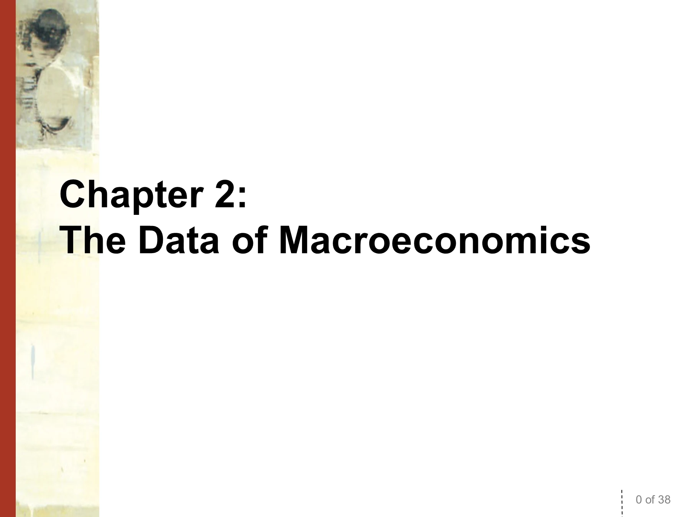
第 2 章
宏观数据
The Data of Macroeconomics
The Data of Macroeconomics · 63 页
| 中文 | English | 页 |
|---|---|---|
| 国内生产总值 | gross domestic product (GDP) | 2-4 |
| 增加值 | value added | 2-6 |
| 最终产品 | final goods | 2-7 |
| 国民收入核算恒等式 | national income accounts identity | 2-11 |
| 消费 | consumption | 2-12 |
| 投资 | investment | 2-14 |
| 存货投资 | inventory investment | 2-14 |
| 存量 | stock | 2-17 |
| 流量 | flow | 2-17 |
| 政府购买 | government purchases | 2-20 |
| 转移支付 | transfer payments | 2-20 |
| 净出口 | net exports | 2-22 |
| 国民生产总值 | gross national product (GNP) | 2-27 |
| 名义 GDP | nominal GDP | 2-30 |
| 实际 GDP | real GDP | 2-30 |
| 基年 | base year | 2-30 |
| GDP 平减指数 | GDP deflator | 2-35 |
| 环比加权实际 GDP | chain-weighted real GDP | 2-42 |
| 消费价格指数 | consumer price index (CPI) | 2-43 |
| 替代偏误 | substitution bias | 2-50 |
| PCE 平减指数 | PCE deflator | 2-53 |
| 核心通胀 | core inflation | 2-54 |
| 劳动力 | labor force | 2-56 |
| 失业率 | unemployment rate | 2-57 |
| 劳动参与率 | labor force participation rate | 2-57 |

第 2 章
宏观数据
The Data of Macroeconomics
美国：圣路易斯联邦储备银行的 FRED 数据库
http://research.stlouisfed.org/fred2/
中国：中华人民共和国国家统计局
http://www.stats.gov.cn/sj/
或者亚特兰大联邦储备银行的中国宏观经济面板
https://www.frbatlanta.org/cqer/research/china-macroeconomy.aspx?panel=1
这一页看起来只是几个网址，实际是在交代这门课的工作方式。宏观经济学讨论的每一个命题——增长、通胀、失业——最终都要落到一条可以下载的时间序列上，而序列的频率（月度、季度、年度）、口径（季调与否、同比还是环比）、修订制度，决定了它能不能用来支持某个论断。
FRED 的价值在于把不同来源的序列统一成同一种格式，一条链接就能取到几十年的季度数据，还能直接画图。国家统计局的数据更贴近中国经济的实际结构，但口径与美国的序列并不总能一一对应。
所以本章反复要做的事，是先确定定义，再看数字。口径不清的数字，比没有数字更危险：同一个「消费占比」，用支出法和社会消费品零售总额算出来可以差十几个百分点。
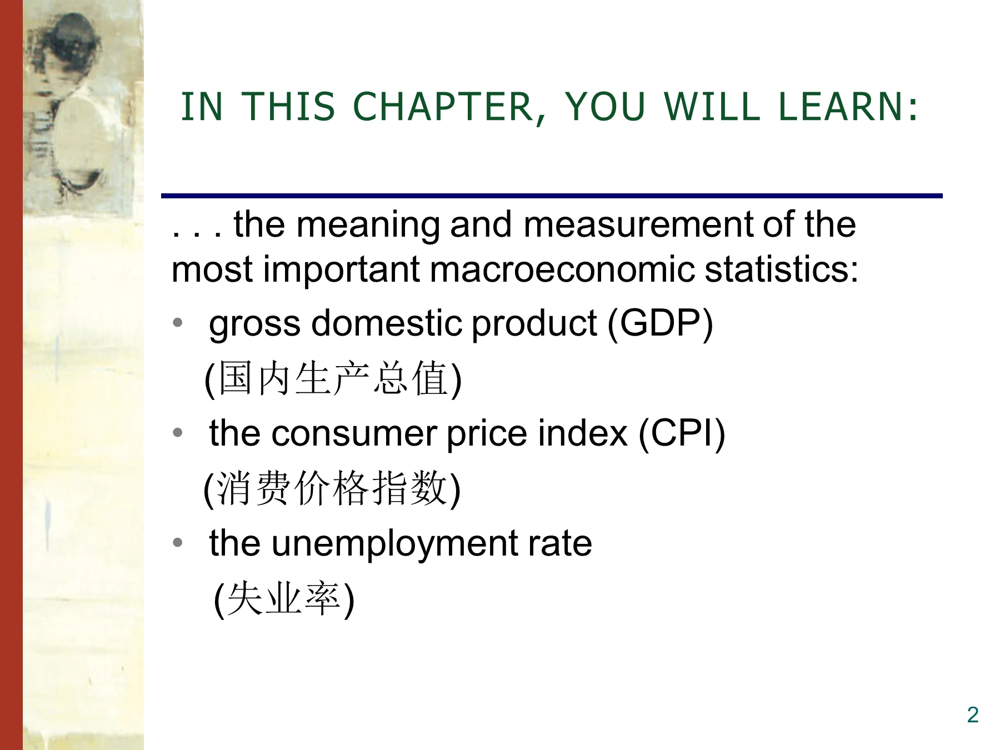
三个最重要的宏观统计量的含义与衡量方法：
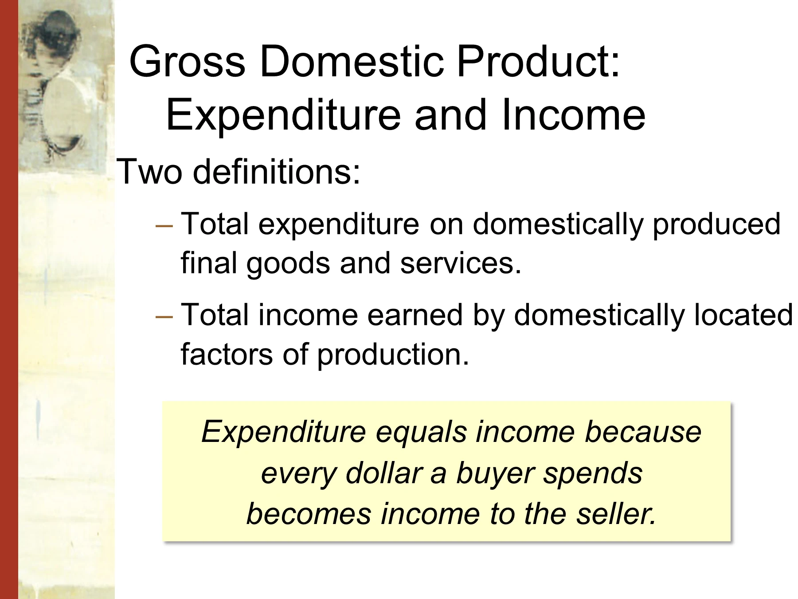
两种定义：
支出等于收入，因为买方花出的每一美元都成为卖方的收入。
同一个东西有两个名字，是因为每一笔交易都有两方。面包师卖出 6 美元面包，买家支出 6 美元，卖家得到 6 美元收入——支出与收入是同一笔钱的两面，不是两个需要事后验证是否相等的独立测量。GDP 的两个定义，只是选择站在交易的哪一侧看：站在买家一侧，加总的是全社会的最终支出；站在卖家一侧，加总的是这些支出转化成的工资、租金、利息和利润。
要说明这个等式为什么必然成立，得看一笔钱在企业内部怎么分。假定面粉厂用 3 美元小麦磨成 6 美元面粉，它的销售收入是 6 美元，其中 3 美元付给上游，剩下的 3 美元拆成工资、租金和利润付给本国的生产要素。把全社会企业加总，每一家的「收入减中间投入」都变成要素收入，而中间投入项在加总中两两相消。剩下的正好是最终产品的价值，这就是两个定义重合的算术原因。
定义里的限定词不能省。「国内生产」划的是地理边界，外国公司在中国境内的工厂，产出计入中国 GDP；「本国要素」划的是人员边界，中国工人在海外挣的工资不计入中国 GDP。把这两个边界分开，就是 GNP 与 GDP 的区别。两条边界在大多数年份相差不大，在爱尔兰、孟加拉这类国家却能差到两位数百分比。
等式还有一层隐含前提：产出按市场价格计价，而且当期生产的东西在当期都有了买主。企业生产了却卖不掉，等式会当场破裂。核算体系对此的处理办法是把卖不掉的部分记作存货投资，等于假设企业自己买下了自己的产出。这个约定不是遁词，它决定了「产出等于支出」到底是经验规律还是记账恒等式，后面会专门讨论。
常见误读是把 GDP 理解成「卖出去的总金额」。按这个理解，仓库里积压的货物就不该计入，可它确实计入了。GDP 衡量的是生产，不是销售。
Most students, having taken principles of economics, will have seen this definition and be familiar with it. It’s not worth spending a lot of time on.
It might be worthwhile, however, to briefly review the factors of production.
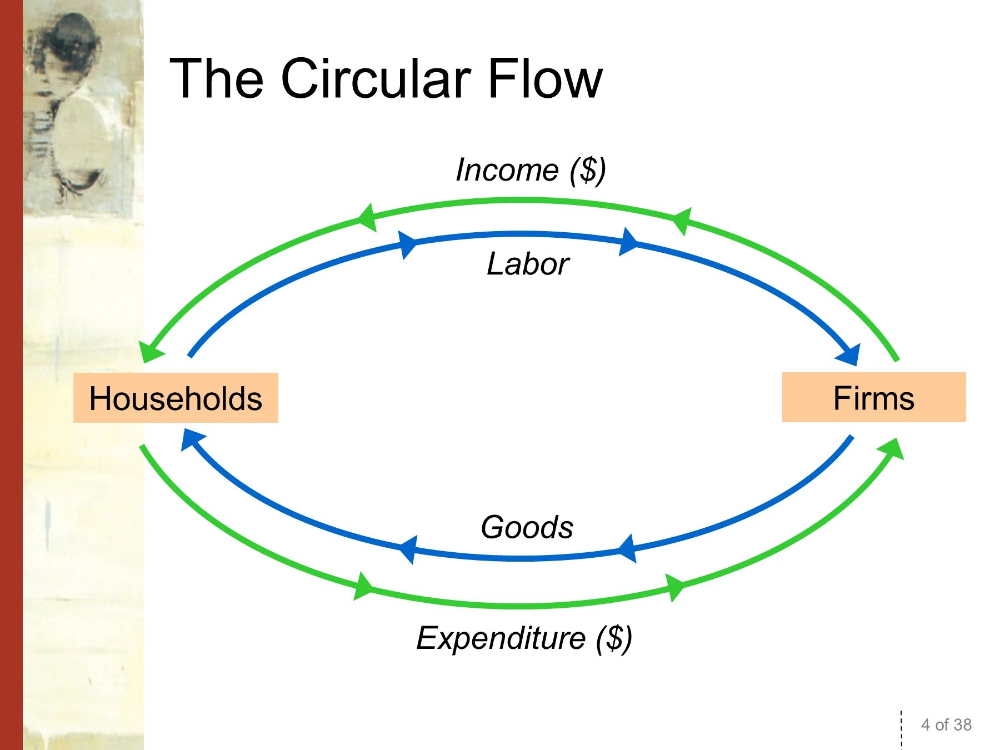
家庭与企业之间的两重循环。
图中 内环是实物流动：家庭向企业提供劳动，企业向家庭提供商品。外环是货币流动：企业向家庭支付收入（$），家庭向企业支付支出（$）。两个环方向相反，首尾相接。
把上一页的等式画成图，得到两个环。内环是实物：家庭向企业提供劳动，企业向家庭提供商品。外环是货币：企业向家庭支付收入，家庭把收入花回企业。两个环方向相反，转一圈回到原点。
关键在于外环上有两个可以插温度计的位置。在「企业付钱给家庭」这一处读，得到的是收入；在「家庭付钱给企业」这一处读，得到的是支出。同一股水流，两个位置读数相同，因为中间没有别的出口。两个定义的等价性，在图上是「环闭合」这件事，而不是巧合。
环之所以闭合，依赖三个省略：没有政府收税，没有对外贸易，家庭不储蓄。三者任何一个出现，外环就多出一条岔路——家庭收入的一部分不再流回企业。真实经济里这三条岔路都很宽，所以完整的核算恒等式必须把漏出去的部分一一补回：储蓄变成投资，税收变成政府购买，进口从出口中扣除。
这张图的价值不在于描述现实，而在于它标出了现实需要在哪些地方打补丁。图上每多一个方块（政府、银行、国外部门），就多一组需要单独建模的行为关系。后面几章搭模型时，做的事情本质上就是往这张图上加方块。
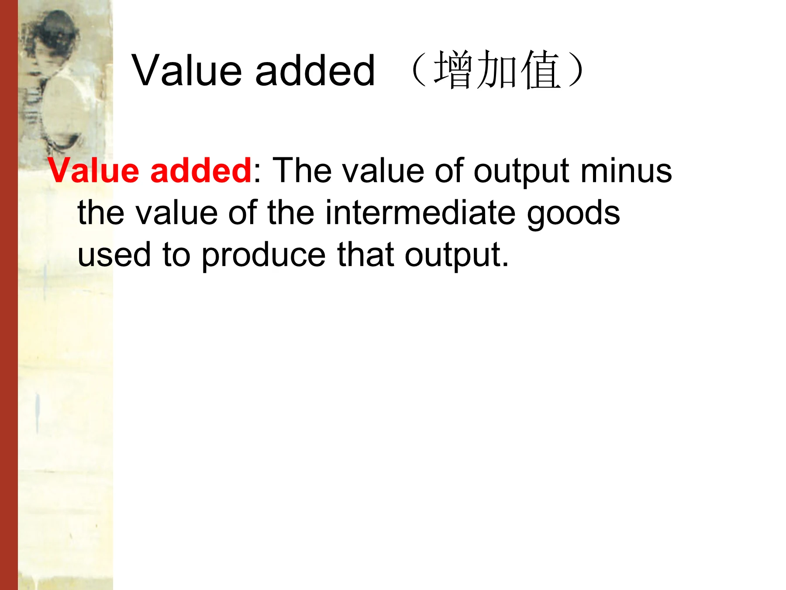
增加值：产出的价值减去生产该产出所使用的中间产品的价值。
多阶段生产带来一个麻烦：一条面包的 6 美元里，已经含有面粉的 3 美元和小麦的 1 美元。若把三个环节的销售额都加进 GDP，得到 10 美元，比真实产出多出 4 美元。增加值这个概念就是为了消掉这部分重复。
它衡量的是这一环节自己新创造了多少，而不是经手了多少钱。中间产品与最终产品的区别不在物品本身，而在用途：面粉卖给面包厂是中间产品，卖给家庭是最终产品。同一袋面粉，两条去向，两种记账方式。
It might be useful here to remind students what the term “intermediate goods” means.
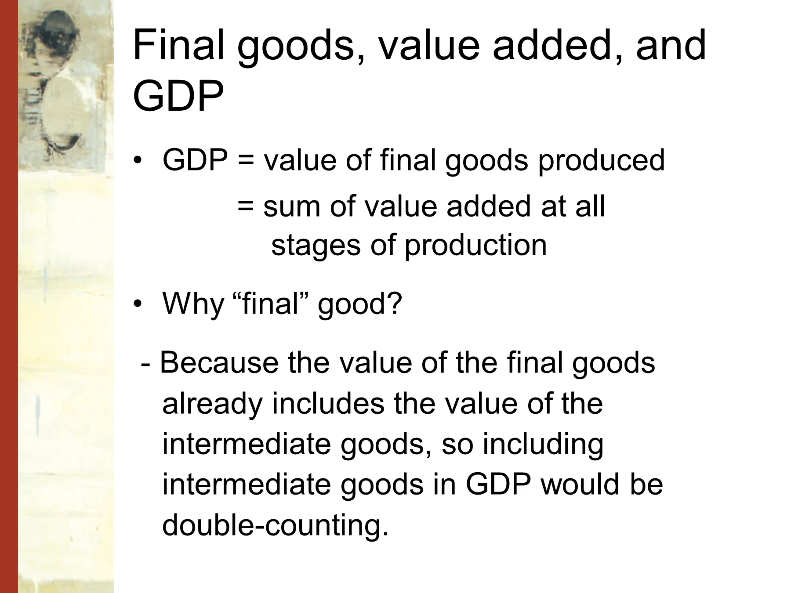
GDP ＝ 生产的最终产品的价值
＝ 各生产环节增加值之和
为什么必须是「最终」产品？
把上一页的想法写成式子，等式就自己出来了。设有 n 个生产环节，第 i 环节的产出价值为 Vi，它从上游买进的中间投入为 Mi，则增加值 Ai = Vi − Mi。加总得 ΣAi = ΣVi − ΣMi。而第 i 环节的中间投入恰好是第 i−1 环节的产出，即 Mi = Vi−1，逐项相消之后只剩最后一个环节的产出 Vn。
所以 GDP 等于最终产品价值，也等于各环节增加值之和，两条路给出同一个数，不是两个需要相互校验的估计。这个相消结构在后面的投入产出表里会以矩阵的形式重新出现。
「最终」的判据是当期不再进入别的生产过程。这条判据依赖时间窗口：今年生产的面粉今年被面包厂用掉，是中间产品；被面包厂囤到明年，今年算最终产品（存货投资），明年再作为中间投入扣掉。同一批货物在不同年份扮演不同角色，账却始终对得上。
容易混淆的是「最终产品」与「消费品」。机器设备是最终产品，但它不是消费品，它进入投资。判据是「不再被当期生产过程消耗」，不是「被谁使用」。
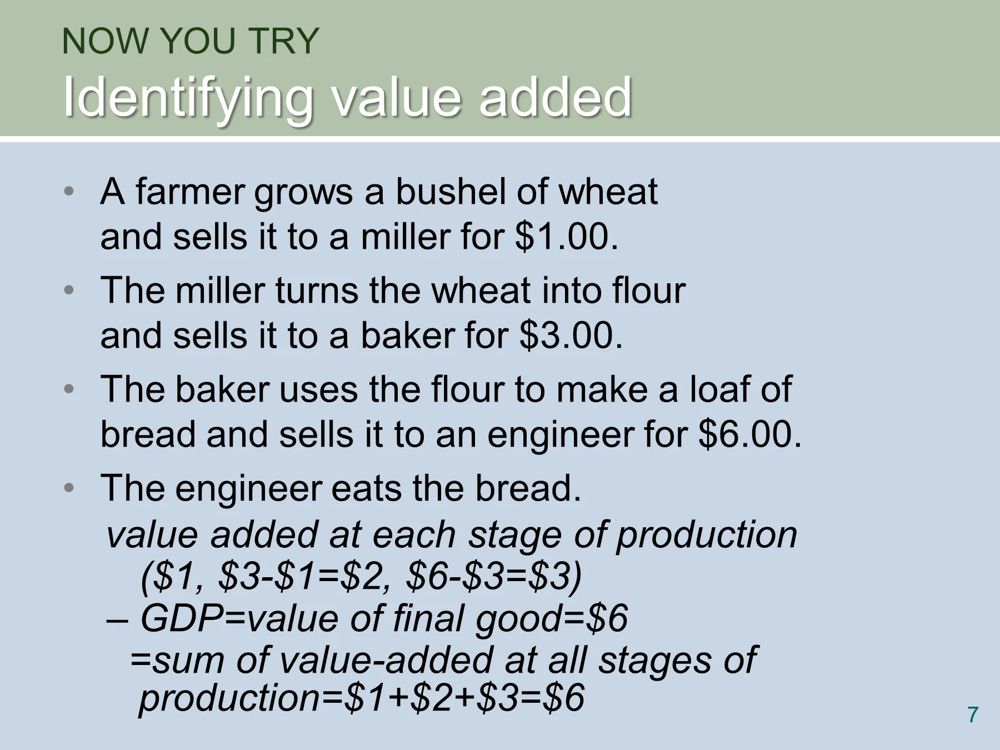
农民种出一蒲式耳小麦，以 1.00 美元卖给磨坊主。
磨坊主把小麦磨成面粉，以 3.00 美元卖给面包师。
面包师用面粉烤成一个面包，以 6.00 美元卖给一位工程师。
工程师把面包吃掉。
各环节的增加值：
四个人的例子把两条路径摆在一起。若把三笔销售额相加，得到 10 美元，这不是 GDP：小麦的 1 美元和面粉的 3 美元都已经包含在面包的 6 美元里，被数了两遍。
按增加值算：农民 1，磨坊主 3−1＝2，面包师 6−3＝3，合计 6。按最终产品算，只有面包是最终产品，价值 6。两条路径都给出 6，差额 4 美元正是被重复计算的部分，它等于中间产品销售额之和 1＋3。
这里有个隐含约定：假定这是经济中仅有的交易。现实中农民还要买化肥、面包师还要付电费，那些环节各自有增加值，同样相加即可，结论不变。练习的价值不在数字，而在于把「为什么不能加总销售额」变成一次具体的减法。
This is end-of-chapter problem 2.
When students compute GDP, they should assume that these are the only transactions in the economy.
Lessons of this problem:
GDP = value of final goods = sum of value at all stages of production
We don’t include the value of intermediate goods in GDP because their value is already embodied in the value of the final goods.
Answer:
Each person’s value added (VA) equals the value of what he/she produced minus the value of the intermediate inputs he/she started with.
Farmer’s VA = $1
Miller’s VA = $2
Baker’s VA = $3
GDP = $6
Note that GDP = value of final good = sum of value added at all stages of production.
Even though this problem is highly simplified, its main lesson holds in the real world: The value of all final goods produced equals the sum of value added in all stages of production of all goods.
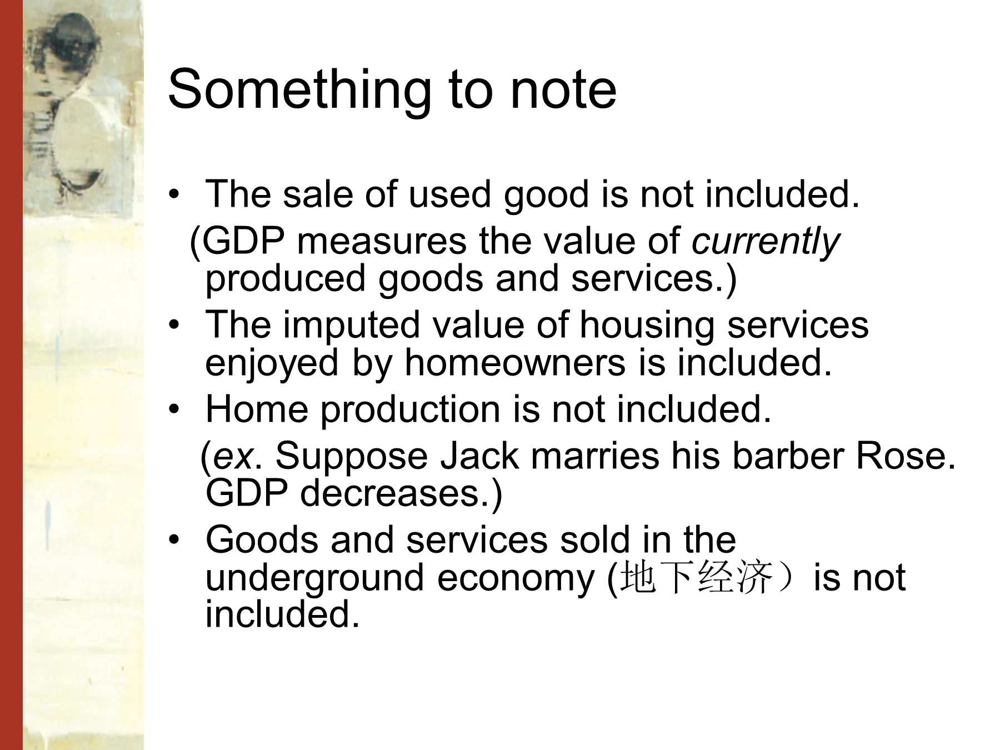
二手货的销售不计入。
（GDP 衡量的是当期生产的物品与服务的价值。）
自住房给房主带来的住房服务，按推算价值计入。
家庭内部生产不计入。
（例：假设 Jack 娶了他的理发师 Rose，GDP 会下降。）
地下经济中出售的物品与服务不计入。
上一条讲的是「怎么加总」，这一条讲的是「哪些生产算数」。四个例子背后是同一条原则：GDP 统计当期新生产的、经由市场交易（或可以合理估算出市场价值）的最终产品。
二手货不计入，因为它在上一次生产时已经计过，这一次只是所有权转移，没有新产出。但二手车经销商的佣金计入，那是当期提供的服务；拍卖行的服务费同理。物品本身与围绕它的服务，在核算里是两回事。
自住房的推算租金计入，理由是房主给自己提供了住房服务，这种服务与租客付的租金性质相同，只是没有市场交易，统计局按同类住房的市场租金估一个数。这条处理让「租房住」与「买房住」的 GDP 贡献接近；否则一批家庭从租房转为买房，GDP 会凭空下降。
家务不计入，因为没有市场交易，也难以估价。Jack 娶了理发师 Rose 这个例子说明后果：Rose 的理发服务从市场转入家庭，GDP 下降，而两人的生活没有任何变化。这类遗漏不是统计疏漏，而是「以市场交易为界」这条定义的必然产物，也是用 GDP 衡量福利时最常被提起的缺陷。
地下经济同理：交易真实发生，只是没有进入统计报表。各国的估算从几个百分点到两成不等，估算方法的差异本身就让跨国比较变得困难。
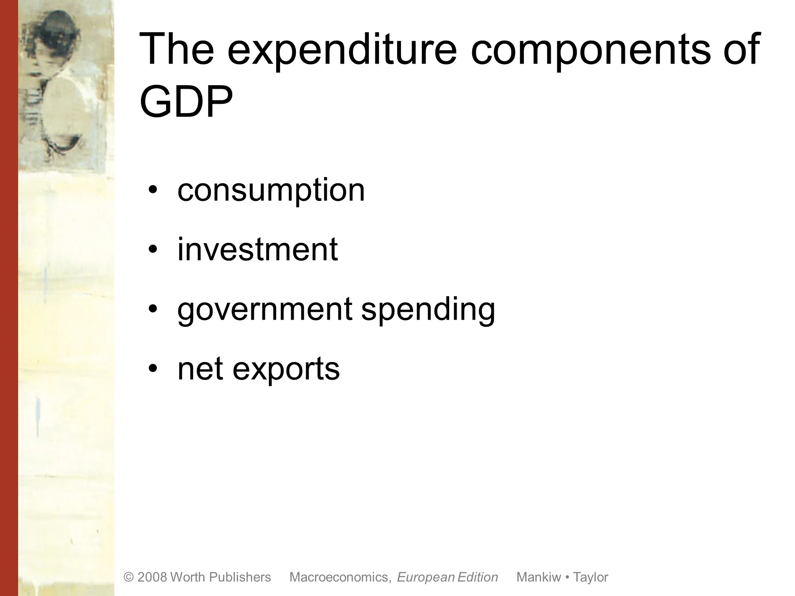
接下来把支出按买主分类。分类依据不是产品属性，而是谁掏钱：同一个面包，家庭买是消费，军队买是政府购买，卖给外国人是出口，企业买来当原料则是中间投入，不计入最终支出。
四类买主穷尽了最终产品的全部去向，这一点是国民收入核算恒等式能成立的前提。不是先有四块再加总成 GDP，而是先有「所有产出都被某人买走」这个事实，才切出四块。
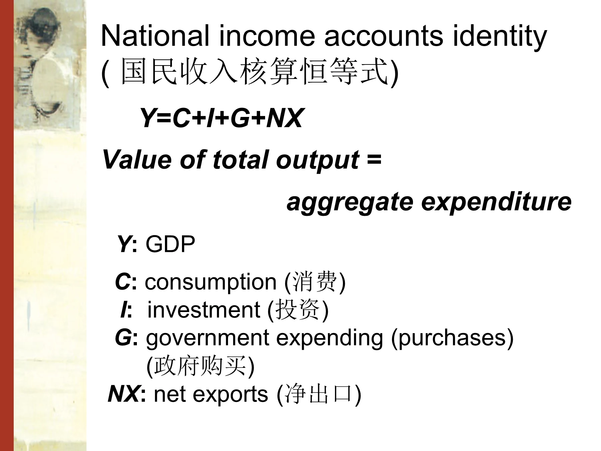
Y = C + I + G + NX
总产出的价值 ＝ 总支出
Y：GDP
C：消费（consumption）
I：投资（investment）
G：政府支出（购买）（government purchases）
NX：净出口（net exports）
四类买主排好，恒等式就是一句同义反复：每一个最终产品都被这四类人中的某一类买走。
需要解释的是 NX 为什么可能为负。C、I、G 三项里都混着进口品：家庭买日本车算 C，企业买德国机床算 I，政府买外国疫苗算 G。这些不是本国生产的，直接相加会高估本国产出。把进口总额从三项中减去，剩下的才是「本国生产」的部分；出口是外国人对本国产品的支出，加上去。两者合起来就是 NX，一次把账轧平。
恒等号的意思是「按定义成立」，不是「市场均衡时成立」。任何一年、任何国家，只要统计口径一致，这个等式必然成立，它本身不预测任何东西。它的预测力来自后面给 C、I、G、NX 各自加上行为假设——那时恒等式才变成模型里的均衡条件。同一行符号，在核算里是会计恒等式，在模型里是均衡条件，这个身份转换是初学阶段最容易含混的地方。
还有一个方向性的提醒：这个式子常被读成「GDP 由四部分构成，所以可以分别拉动」。构成关系不等于因果关系。G 增加会在资源既定的前提下挤出 I 或 NX，C 的上升可能伴随 I 的下降，四项之间的相互牵制要等模型建好才能讨论。
净出口为负时，Y 小于 C＋I＋G，差额由外国资本流入弥补。这不是统计上的瑕疵，而是资源约束的直接体现：本国花掉的比生产的多，多的部分必然来自外部。
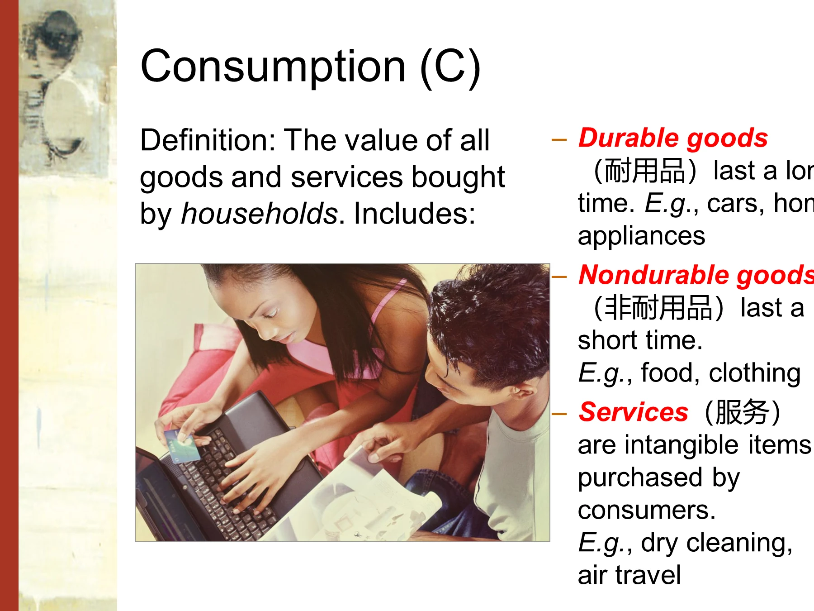
定义：家庭购买的全部物品与服务的价值。包括：
消费按耐用品、非耐用品、服务三分，判据是使用寿命，但这条界线是统计惯例而非物理事实——一件衣服穿三年算非耐用品，一辆车开十五年算耐用品，中间没有明确的分界点。
真正的难点在住房。新房支出计入投资，租金计入服务，自住房按推算租金计入服务。这样处理的好处是把「房子」与「房子提供的居住服务」分开：前者是资本形成，后者是当期消费。租客买下自己租住的房子，消费不变、投资不变，账面上什么都没发生，这与直觉一致。
换句话说，房子被当成一台生产「居住服务」的机器：买机器算投资，机器产出的服务算消费，无论这台机器的主人是谁。
A consumer’s spending on a new house counts under investment, not consumption. More on this in a few moments, when we get to Investment.
A tenant’s spending on rent counts under services—rent is considered spending on “housing services.”
So what happens if a renter buys the house she had been renting? Conceptually, consumption should remain unchanged: Just because she is no longer paying rent, she is still consuming the same housing services as before.
In national income accounting, (the services category of) consumption includes the imputed rental value of owner-occupied housing.
To help students keep all this straight, you might suggest that they think of a house as a piece of capital which is used to produce a consumer service, which we might call “housing services.” Thus, spending on the house counts in aggregate investment, and the value of the housing services that the house provides counts in aggregate consumption (regardless of whether the housing services are being consumed by the owner of the house or a tenant).
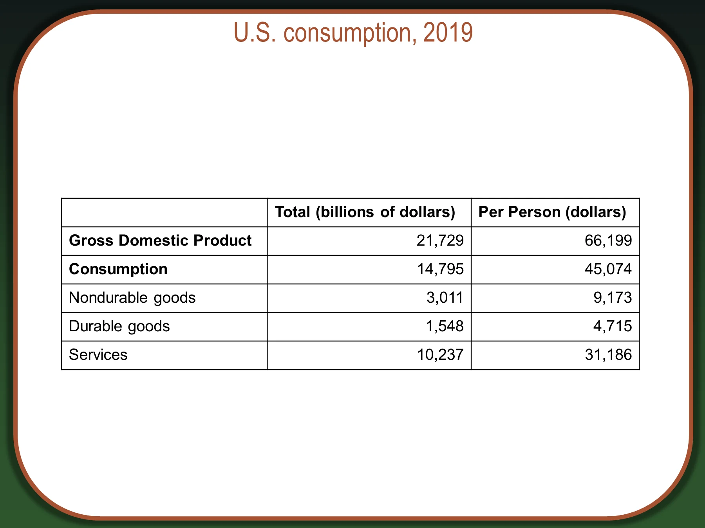
| 总额（十亿美元） | 人均（美元） | |
|---|---|---|
| 国内生产总值 | 21,729 | 66,199 |
| 消费 | 14,795 | 45,074 |
| 非耐用品 | 3,011 | 9,173 |
| 耐用品 | 1,548 | 4,715 |
| 服务 | 10,237 | 31,186 |
这张表要读的是三个比例，不是五个数字。消费占 GDP 的 68.1%（14,795/21,729）；服务占消费的 69.2%（10,237/14,795）；耐用品只占消费的 10.5%。三个比例合起来说明一件事：美国经济的最终需求以服务为主，耐用品虽然引人注目——车、家电、手机——在总量里其实很小。
非耐用品和服务加起来接近九成，这个结构决定了消费对商品价格冲击的敏感度低于直觉：油价上涨直接推高的是非耐用品中的汽油项，占比有限，传导到总消费要经过一段路程。
人均一列把总量换成可比尺度。人均消费 45,074 美元，是人均 GDP 66,199 美元的 68%。跨国比较时这一列更有用，因为它消掉了人口规模。
把这张表与中国的同口径数据并排放，差别最大的是消费占比：中国居民消费长期在 GDP 的四成上下，美国接近七成。这个差距不是统计误差，它对应两国在储蓄率、社会保障覆盖和增长模式上的真实差别，也是后面讨论储蓄与贸易顺差时绕不开的起点。
Source: Bureau of Economic Analysis (http://www.bea.gov), U.S. Department of Commerce
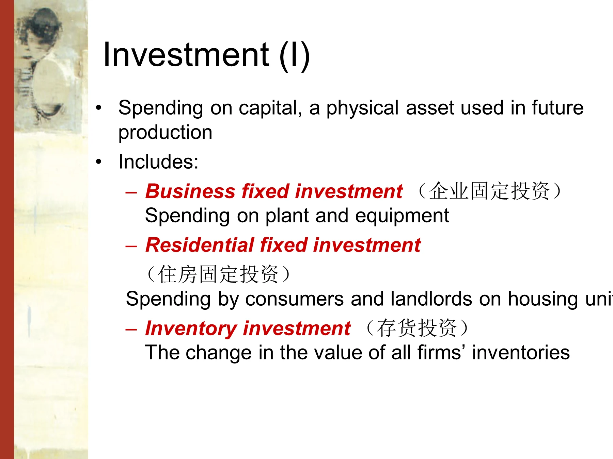
用于资本的支出，资本是用于未来生产的实物资产。
包括：
投资在核算里有比日常语言严格得多的含义：只算新生产的资本品。三类之中，前两类是真正的资本形成，第三类是残差项，作用是让「生产」与「销售」的差额有地方落脚。
存货投资可以为负。年初存货 100 亿、年末 80 亿，这一年的存货投资是 −20 亿。它记录的是企业卖掉了过去的存货，这部分销售没有对应的当期生产，若不减去，支出就会大于产出。
二手资本品的交易不进入总量。我花 1,000 美元买一台二手电脑，我这一侧是 1,000 美元投资，卖主那一侧是 1,000 美元负投资，净额为零。核算关心的是新创造了多少资本，而不是资本换了谁的手。这条原则与二手消费品不计入 GDP 是同一条。
注意住房的归属：家庭买新房算投资，不算消费。这看起来别扭，但把房子理解成生产居住服务的机器就顺了——买机器是投资，机器产出的服务是消费。
Note that aggregate investment equals total spending on newly produced capital goods. If I pay $1,000 for a used computer for my business, then I’m doing $1,000 of investment, but the person who sold it to me is doing $1,000 of disinvestment, so there is no net impact on aggregate investment.
The housing issue
A consumer’s spending on a new house counts under investment, not consumption.
A tenant’s spending on rent counts under services—rent is considered spending on “housing services.”
So what happens if a renter buys the house she had been renting? Conceptually, consumption should remain unchanged: Just because she is no longer paying rent, she is still consuming the same housing services as before.
In national income accounting, (the services category of) consumption includes the imputed rental value of owner-occupied housing.
To help students keep all this straight, you might suggest that they think of a house as a piece of capital which is used to produce a consumer service, which we might call “housing services.” Thus, spending on the house counts in aggregate investment, and the value of the housing services that the house provides counts in aggregate consumption (regardless of whether the housing services are being consumed by the owner of the house or a tenant).
Inventories
If total inventories are $10 billion at the beginning of the year and $12 billion at the end, then inventory investment equals $2 billion for the year.
Note that inventory investment can be negative (which means inventories fell over the year).
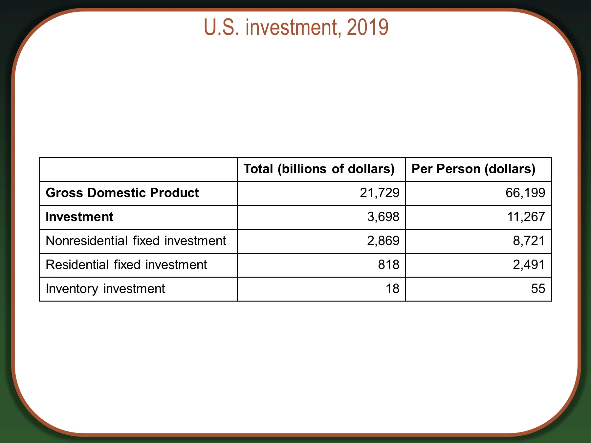
| 总额（十亿美元） | 人均（美元） | |
|---|---|---|
| 国内生产总值 | 21,729 | 66,199 |
| 投资 | 3,698 | 11,267 |
| 非住宅固定投资 | 2,869 | 8,721 |
| 住宅固定投资 | 818 | 2,491 |
| 存货投资 | 18 | 55 |
投资占 GDP 的 17.0%（3,698/21,729），其中非住宅固定投资 13.2%、住宅 3.8%、存货只有 180 亿美元，占比不到千分之一。三个分项加总是 3,705（十亿美元），与合计 3,698 差 70 亿，这是各分项分别四舍五入的结果，不是数据错误——读表时遇到这种小额不符，先想四舍五入。
存货一项值得单独看。它数值小，却是四类支出里波动最大的：经济下行时企业削减存货，存货投资可以变成很大的负数，把 GDP 增速拉低一两个百分点。总量小不等于影响小，这是读宏观数据时最常见的判断失误。
与消费表对照，两张表的分母相同，可以直接比较结构：消费 68%、投资 17%、政府购买 17.5%、净出口 −2.7%，四项合计 99.9%，差额来自四舍五入。这个结构说明美国经济对消费的依赖，也说明为什么消费信心指数在短期预测中地位那么高。
Source: Bureau of Economic Analysis (http://www.bea.gov), U.S. Department of Commerce
Third-quarter advance estimate (released 12/23/2014)
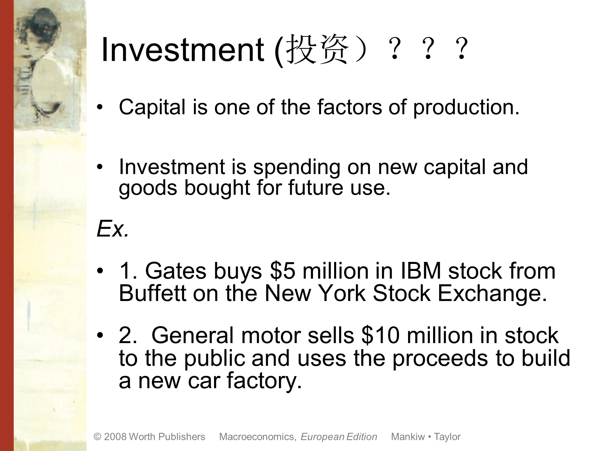
资本是生产要素之一。
投资是用于新资本以及为将来使用而购买的物品的支出。
例：
1. 盖茨在纽约证券交易所从巴菲特手中买入 500 万美元 IBM 股票。
2. 通用汽车向公众发行 1,000 万美元股票，用募集资金建造新的汽车工厂。
两个例子要分清「买资产」与「造资产」。盖茨从巴菲特手里买 500 万美元 IBM 股票，钱从一个人转到另一个人，IBM 没有拿到一分钱，没有新机器、新厂房产生。这只是金融资产的转手，不计入投资。股票在交易所的价格涨跌同样不进入 GDP，二级市场的成交额再大也只是所有权的交换。
通用汽车向公众发行 1,000 万美元股票，把钱用来建新厂。发行股票这一步仍然不是投资，建厂这一步才是：新厂房是当期新生产的资本品，计入企业固定投资。同一笔钱经过两个环节，只在实体环节计一次。
这条区分在宏观里反复出现。新闻里说「投资增长」，可能指固定资产投资，也可能指股市市值，两者可以背离很久。判断标准只有一条——有没有新的资本品被生产出来。附带一条：券商佣金是当期提供的服务，计入消费或中间投入，与股票本身无关。
「金融投资」与宏观经济学里的「投资」是同名异义。前者是资产组合的调整，后者是资本形成。混淆这两个词，会在读政策文件时得出完全相反的判断。
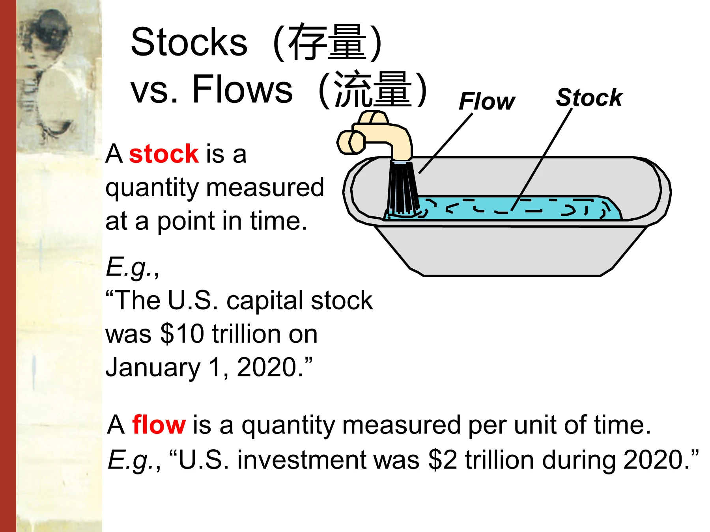
| 存量 | 流量 |
|---|---|
| 存量是某一时点上衡量的数量。 | 流量是每单位时间衡量的数量。 |
| 例：「2020 年 1 月 1 日，美国的资本存量为 10 万亿美元。」 | 例：「2020 年期间，美国的投资为 2 万亿美元。」 |
判据只有一条：这个量有没有时间维度。存量是某一时点的快照，问「多少」就够；流量是一段时间内的累积，必须问「多长时间内多少」。「2020 年 1 月 1 日的资本存量是 10 万亿」是一句完整的话；「投资是 2 万亿」不完整，得补上「2020 年全年」。
浴缸是最好的比喻：缸里的水位是存量，水龙头流进来的水量是流量。水位的变化等于流入减流出，所以流量往往是某个存量的变化率——投资是资本存量的变化率，储蓄是财富存量的变化率，赤字是债务存量的变化率。
这个对应关系是常见规律，不是定义。人口中每年新增的毕业生是流量，但它不等于「有学位人数」的变化率，因为还有人去世、有人移民。判断时看定义，不要看类比。
之所以要分清，是因为两类量在模型里的行为完全不同。存量在短期是给定的状态变量，调整慢；流量可以瞬时变化。后面写资本积累方程 ΔK = I − δK 时，左边是存量的变化，右边是流量，量纲必须对齐；混用两者会直接导致方程写错，而且错得很隐蔽——因为两边都是「多少钱」。
价格水平是存量，通胀率是流量。这个区分在讨论「通胀是不是货币现象」时会变得关键：货币供给是存量，货币增长是流量，能对上的是后者。
The bathtub example is the classic means of explaining stocks and flows, and appears in Chapter 2.
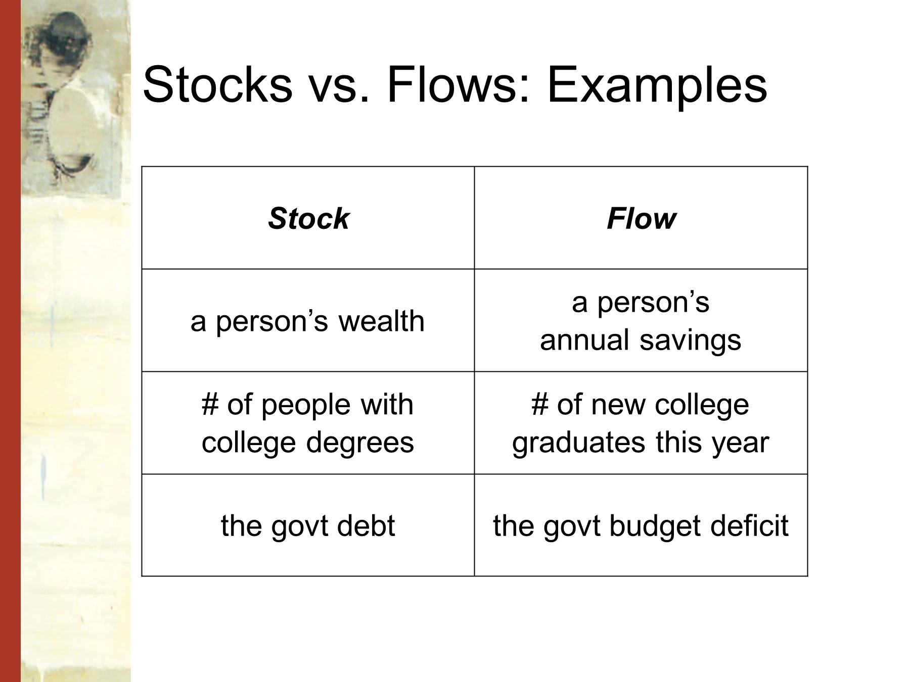
| 存量 | 流量 |
|---|---|
| 一个人的财富 | 一个人每年的储蓄 |
| 拥有大学学位的人数 | 今年新毕业的大学生人数 |
| 政府债务 | 政府预算赤字 |
三组例子对应三种常见混淆。财富与储蓄：财富是资产负债表上的余额，储蓄是这一年没有花掉的收入；储蓄为负时财富下降，两者方向可以相反，但量级完全不同。有学位的人数与今年毕业生：前者是存量，后者是流量，而流量只解释存量变化的一部分，另一部分是死亡与移民。政府债务与赤字：债务是累积的欠款，赤字是本年的收支差额，在不考虑估值效应和汇率折算时，赤字是债务的变化率。
还有一处容易忽略的地方：流量变量通常有默认的时间单位——年薪、年度赤字——所以人们说话时把它省掉，省久了就忘了它是流量。「约翰的年薪 5 万」和「约翰的财富 5 万」听起来同构，其实前者缺了时间单位就不成立。
Point out that a specific quantity of a flow variable only makes sense if you know the size of the time unit.
If someone tells you his/her salary is $5,000 but does not say whether it is per month or per year or otherwise, then you’d have no idea what his/her salary really is.
A pitfall with flow variables is that many of them have a very standard time unit (e.g., per year). Therefore, people often omit the time unit: “John’s salary is $50,000.” And omitting the time unit makes it easy to forget that John’s salary is a flow variable, not a stock.
Another point: It is often the case that a flow variable measures the rate of change in a corresponding stock variable, as the examples on this slide (and the investment/capital example) make clear.
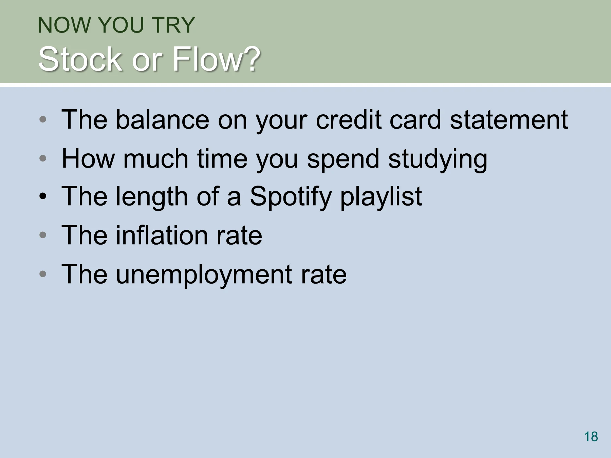
五个选项里，前三个容易，后两个容易错。信用卡账单余额是存量，它是某一时点的欠款；对应的流量是这期新刷了多少钱。学习时间是流量，说「我学 10 小时」必须补上「每天」还是「每周」。歌单长度是存量，对应的流量是每月新增多少首。
通胀率是流量。它的完整说法是「物价每年上涨 3.2%」，时间单位藏在「率」字里。它衡量价格水平这个存量在单位时间内的变化比例，因此属于流量。
失业率是存量。它是失业人数除以劳动力人数，两个都是某一时点的存量，比值本身也在那一时点取值。这一点常被「率」字误导：带「率」的量不一定是流量，要看分子分母是存量还是流量。作为对照，「每月新增失业人数」才是流量。
把这一组做完，判据就固化了：先问「要不要补时间单位」，再问「它是不是某个存量的变化」。两个问题都答完，分类不会错。
You can use this slide to get some class participation. I suggest you display the entire slide, give students a few moments to formulate their answers, and then ask for volunteers. Doing so results in wider participation than if you ask for someone to volunteer the answer immediately after displaying each item on the list.
Here are the answers, and explanations:
The balance on your credit card statement is a stock. (A corresponding flow would be the amount of new purchases on your credit card statement.)
How much time you study is a flow. The statement “I study 10 hours” is only meaningful if we know the time period—whether 10 hours per day, per week, per month, etc.
The size of your compact disc or MP3 collection is a stock. (A corresponding flow would be how many CDs you buy per month or how many MP3 tracks you buy per month.)
The inflation rate is a flow: We say “prices are increasing by 3.2% per year” or “by 0.4% per month.”
The unemployment rate is a stock: It’s the number of unemployed people divided by the number of people in the workforce. In contrast, the number of newly unemployed people per month would be a flow.
Note: Students have not yet seen official definitions of the inflation and unemployment rates. However, it is likely they are familiar with these terms, either from their introductory economics course or from reading the newspaper.
Note: The stocks vs. flows concept is not mentioned very much in the subsequent chapters. If you do not want your students to forget it, then a good idea would be to do the following: As subsequent chapters introduce new variables, ask students whether each new variable is a stock or a flow.
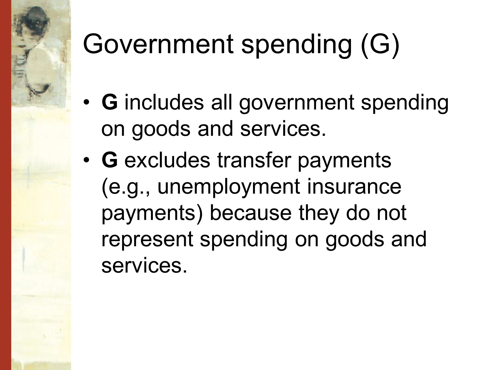
G 包括政府在物品与服务上的全部支出。
G 不包括转移支付（例如失业保险金），因为它们不代表对物品与服务的购买。
「政府支出」这个词在新闻里涵盖很广，在核算里只指政府购买：政府自己买下的东西——修路、给公务员发工资、采购装备。转移支付，包括失业救济、养老金、低保，不计入 G。
理由是重复计算。救济金发到家庭手里，家庭拿去买东西，那笔支出已经记在 C 里。若再把救济金记进 G，同一笔钱被数两次。G 记录的是政府直接占用的资源，不是政府经手的钱。
国债利息支出同样排除在外，它也是转移，不是购买。于是「政府支出占 GDP 多少」这句话，用不同口径可以差出十几个百分点：按购买口径美国约 17%，按总支出（outlays）口径超过 30%。引用时必须说明是哪一个。
Transfer payments are included in “government outlays,” but not in government spending. People who receive transfer payments use these funds to pay for their consumption. Thus, we avoid double-counting by excluding transfer payments from G.
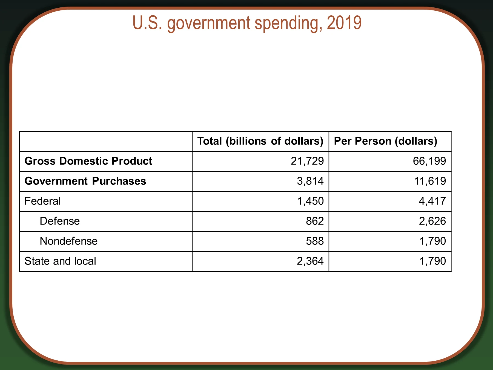
| 总额（十亿美元） | 人均（美元） | |
|---|---|---|
| 国内生产总值 | 21,729 | 66,199 |
| 政府购买 | 3,814 | 11,619 |
| 联邦 | 1,450 | 4,417 |
| 国防 | 862 | 2,626 |
| 非国防 | 588 | 1,790 |
| 州与地方 | 2,364 | 1,790 |
政府购买占 GDP 的 17.5%。结构上州和地方政府略多于联邦：2.36 万亿美元对 1.45 万亿美元。联邦内部国防 8,620 亿美元、非国防 5,880 亿美元，国防约占联邦购买的六成。这个结构与很多人对「美国政府很大」的印象不同——社会保障和医疗保险的大头在转移支付里，不在 G 里，所以按购买口径算，美国政府相对经济规模并不算特别大。
表里州和地方政府的人均数字 1,790 与「非国防」一栏完全相同；按 2,364/21,729 的占比乘人均 GDP 66,199 美元，这一格应在 7,200 美元左右，应是原表的录入错误。读表时遇到分项与合计、总量与人均对不上，先做一次除法或加总，多数情况能立刻定位。
州与地方占大头这一点还有一层含义：教育、公路、警察这些支出由地方财政承担，所以政府购买的区域差异比联邦支出大得多，做地区比较时不能只看联邦预算。
Source: Bureau of Economic Analysis (http://www.bea.gov), U.S. Department of Commerce
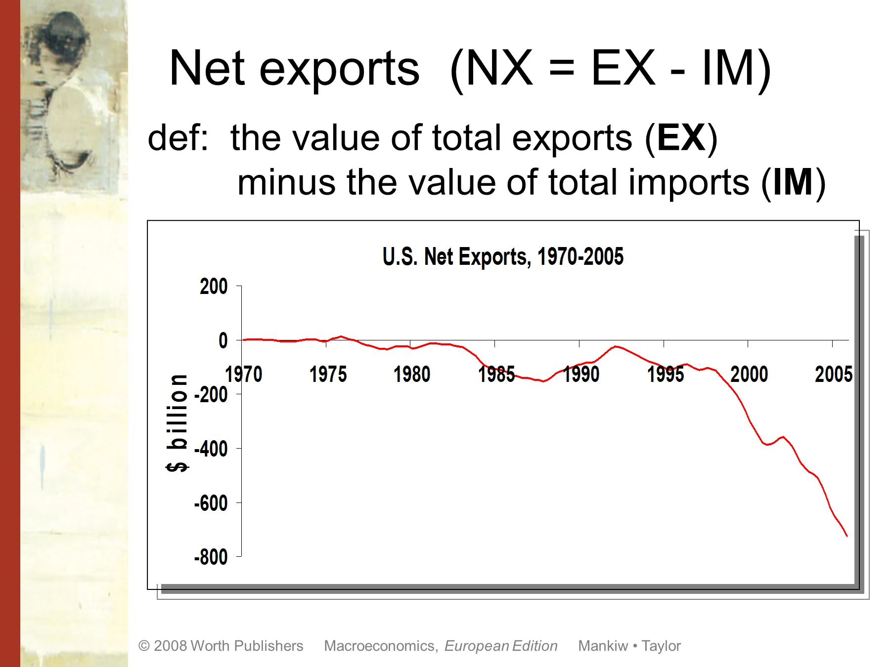
定义：出口总额（EX）减去进口总额（IM）的价值。
净出口把前三项里混入的进口剔除，同时加上外国人对本国产品的支出。它可以为负，而且经常为负。负的 NX 意味着一国当年花掉的最终产品多于它生产的，差额靠向外国借债或出售海外资产弥补。这不是会计把戏，是资源约束：多消费的部分必须有人垫付。
因此 NX 同时记录两件事：贸易账户上的差额，和资本账户上的反向流动。两者是同一枚硬币的两面，后面的开放经济章节会把这条对应写成一个恒等式。把 NX 只当成「出口业绩」来读，会漏掉它作为国际借贷指标的半边含义。
source: FRED Database, The Federal Reserve Bank of St. Louis,
http://www.stls.frb.org/fred/
One issue of debate among macroeconomists is whether the US will be able to sustain such a large trade deficit (€720 bn in 2005) or whether a devaluation of the US dollar is necessary to correct the imbalance. (A devaluation would make US goods cheaper and therefore more competitive, while making US imports more expensive)
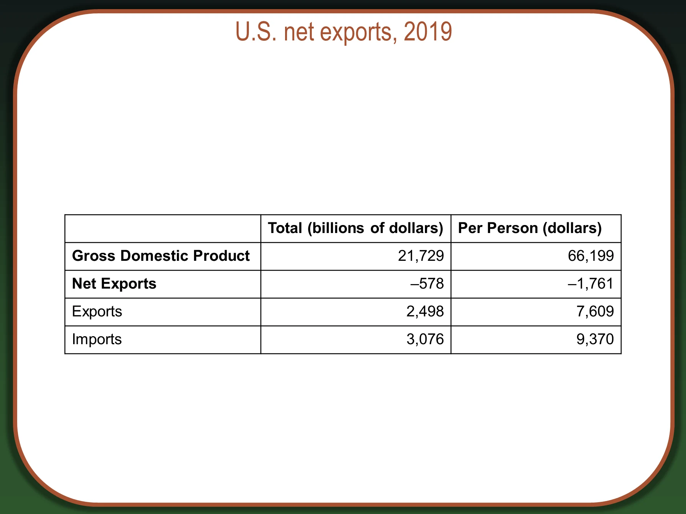
| 总额（十亿美元） | 人均（美元） | |
|---|---|---|
| 国内生产总值 | 21,729 | 66,199 |
| 净出口 | −578 | −1,761 |
| 出口 | 2,498 | 7,609 |
| 进口 | 3,076 | 9,370 |
2019 年美国出口 2.50 万亿美元、进口 3.08 万亿美元，净出口 −5,780 亿美元，占 GDP 的 −2.7%。进口占 GDP 的 14.2%，出口 11.5%，两个数字都不小，说明美国经济对贸易的依赖远高于「净出口只占 −2.7%」给人的印象。
这是读 NX 时最常犯的错：把差额当成贸易的全部。差额小，只说明进出口大致相抵，不说明贸易不重要。关税与汇率冲击影响的是出口与进口这两个大数，而它们在核算里大部分互相抵消，所以 NX 对贸易政策的变化往往不敏感，真正被改变的是国内的生产结构与价格。
四张支出表的分母相同，可以拼成一张完整的 GDP 结构图：消费 68.1%、投资 17.0%、政府购买 17.5%、净出口 −2.7%，合计 99.9%，差额是四舍五入。
Source: Bureau of Economic Analysis (http://www.bea.gov), U.S. Department of Commerce
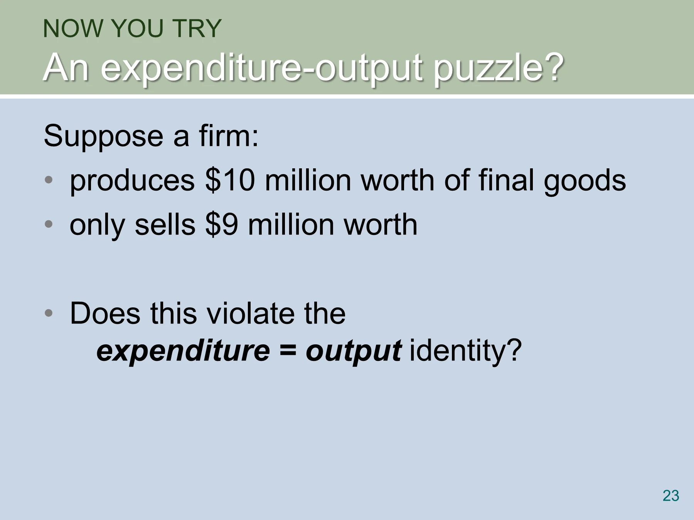
假设一家企业：
生产了价值 1,000 万美元的最终产品
只卖出了价值 900 万美元的部分
这是否违反了「支出 ＝ 产出」的恒等式？
生产的 1,000 万，卖掉的 900 万，剩下的 100 万去了哪里？它没有消失，变成了存货。存货增加是投资的一种，于是 1,000 万 ＝ 消费（买走的 900 万）＋ 投资（100 万）。等式没有破。
这一步的关键，是把企业想象成自己买下了自己的存货。听起来像记账技巧，其实是定义使然：投资是「为将来使用而购买的商品」，企业把卖不掉的产存放在仓库里，用途正是将来出售，性质与买一台机器相同。不管存货积压是有意还是被迫，都计入。
这个约定让「产出 ＝ 支出」从经验规律变成恒等式。代价是存货投资成了一个被动项：它吸收所有卖不掉的产出，也因此成为四类支出里最易波动的一项。企业主动去库存与被动积压，在账上无法区分，这是用 GDP 数据判断经济冷热时的一个盲区。
If you do not wish to pose this as a question, you can “hide” this slide and skip right to the next one, which simply gives students the information.
Suggestion (applies generally, not just here):
When you pose a question like this to your class, don’t ask for students to volunteer their answers right away. Instead, tell them to think about it for a minute and write their answer down on paper. Then, ask for volunteers (or call on students at random). Giving students this extra minute will increase the quality of participation as well as the number of students who participate.
Correct answer to the question:
Unsold output adds to inventory, and thus counts as inventory investment—whether intentional or unplanned. Thus, it’s as if a firm “purchased” its own inventory accumulation.
Here’s where the “goods purchased for future use” definition of investment is handy: When firms add newly produced goods to their inventory, the “future use” of those goods, of course, is future sales.
Note, also, that inventory investment counts intentional as well as unplanned inventory changes. Thus, when firms sell fewer units than planned, the unsold units go into inventory and are counted as inventory investment. This explains why “output = expenditure”—the value of unsold output is counted under inventory investment, just as if the firm “purchased” its own output. Remember, the definition of investment is goods bought for future use. With inventory investment that future use is to give the firm the ability in the future to sell more than its output.
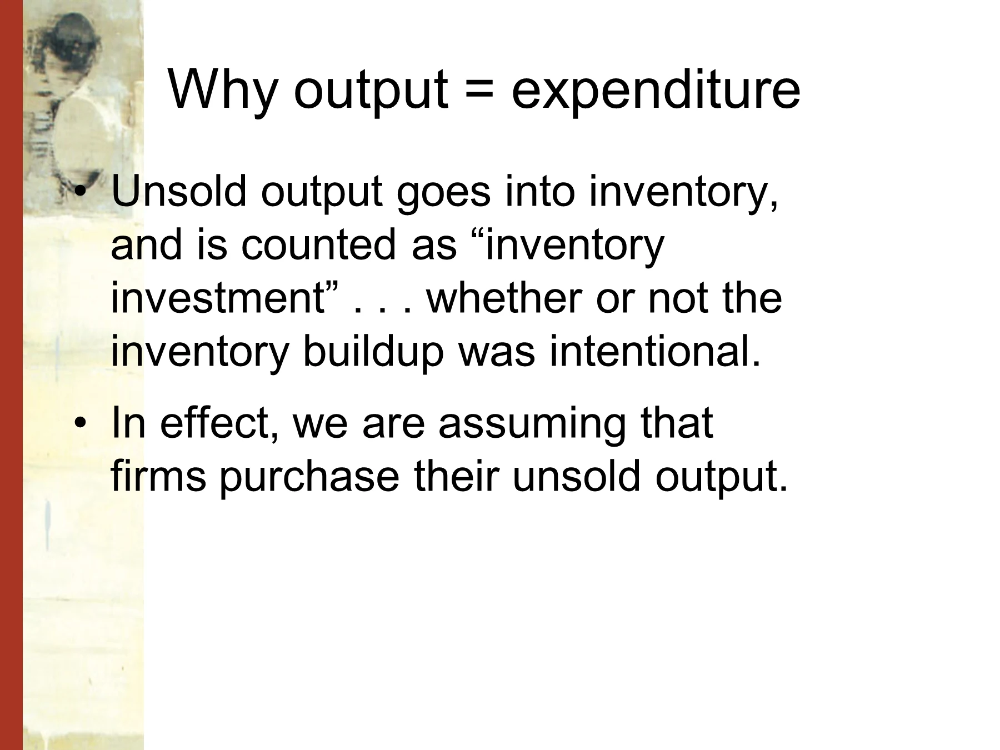
未售出的产出进入存货，被记为「存货投资」……不论存货的积累是有意的还是无意的。
实际上，我们是在假设企业购买了自己未售出的产出。
把上一页的答案写成一般命题：任何未被买走的产出都被记为存货投资，等式因此按定义成立。这句话的分量在于，它把「相等」从需要检验的经验事实，降格为一条记账约定。
于是真正的经验问题换了位置：不再是支出是否等于产出——那是恒等式，不会错——而是存货投资有多大、为什么变动。同一套账，问题问对了才有内容。
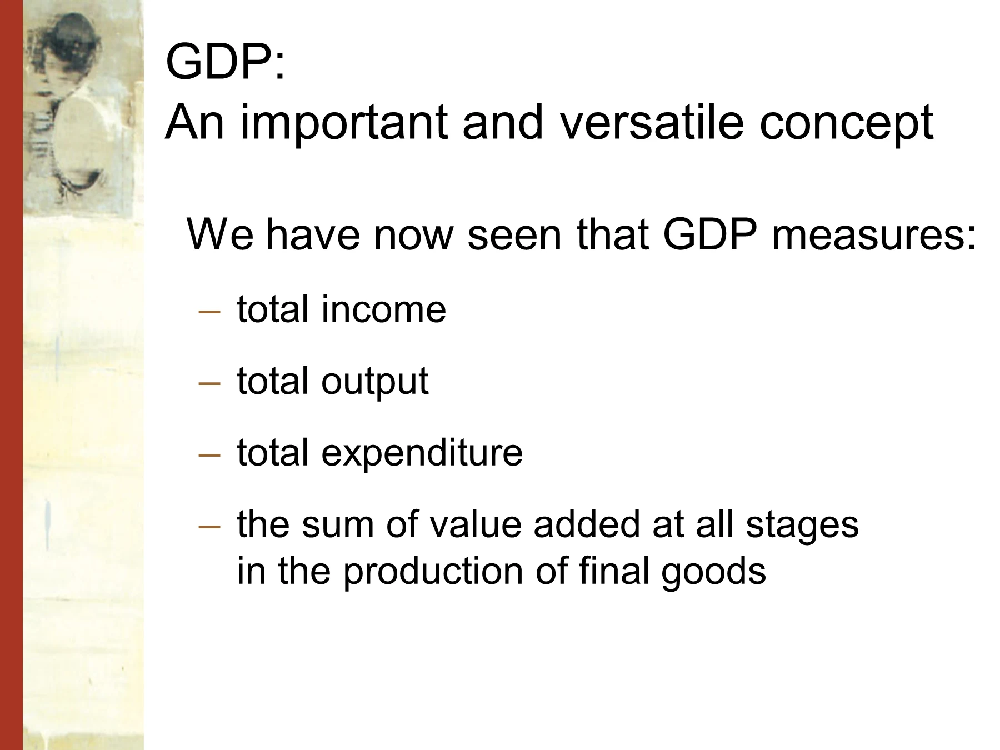
至此我们看到，GDP 衡量的是：
到这里 GDP 有了四个身份：总支出、总收入、总产出、各环节增加值之和。四个数字在理论上完全相等，所以在模型里可以互换使用，经济学家说「收入」「产出」「支出」时常常指的是同一件事。
实务上四个数字来自不同的调查——家庭调查、企业调查、税收记录——会有统计差异，差额归入统计误差。理论上的恒等式不受影响，但引用具体数字时要说明来源。
记住四个身份比记住四个定义有用：看到任何一个，都能立刻想到另外三个，也就能判断某个模型里写 Y 的时候，作者心里想的是生产侧还是支出侧。
This is why economists often use the terms income, output, expenditure, and GDP interchangeably.
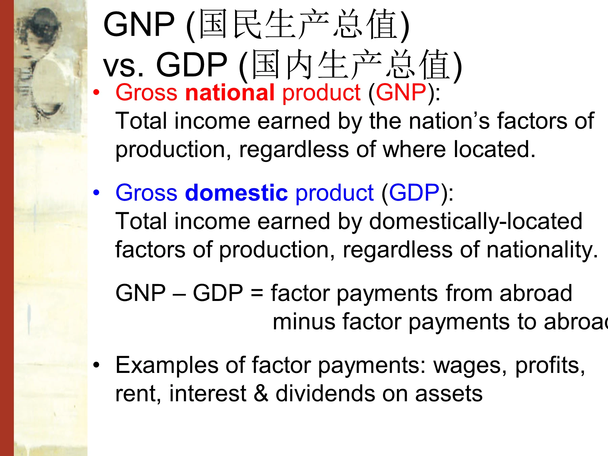
国民生产总值（GNP）：本国生产要素获得的全部收入，不论这些要素位于何处。
国内生产总值（GDP）：本国境内生产要素获得的全部收入，不论其国籍。
GNP − GDP ＝ 来自国外的要素收入 − 支付给国外的要素收入
要素收入的例子：工资、利润、租金、利息与股息。
两个概念只差一个词：国民按要素的所有者划界，国内按生产发生的地点划界。中国工人在德国工厂挣的工资计入德国 GDP、中国 GNP；德国公司在中国工厂赚的利润计入中国 GDP、德国 GNP。
差额是要素收入的双向流动。要素收入包括工资、利润、租金、利息和股息。这里有一个容易出错的地方：侨汇中的赡家款在核算里归入经常转移，不计入 GNP，尽管它确实是一国居民从国外收到的钱。只有「生产要素提供服务所获得的报酬」才算，赠与不算。
两者的大小反映一国参与国际要素市场的方式。资本净输出国 GNP 大于 GDP，因为海外投资的收益回流；外资流入多的国家 GDP 大于 GNP，因为相当一部分产出要付给外国所有者。GDP 衡量的是这块土地上生产了多少，GNP 衡量的是这些人总共挣了多少。用人均收入做福利比较时，GNP（现在的标准名称是国民总收入 GNI）更贴近「国民可支配」的概念。
GDP 与 GNP 的差额，与贸易顺差不是一回事，两者甚至可以符号相反。前者是要素收入的净流向，后者是商品与服务的净流向。
Emphasize that the difference between GDP and GNP boils down to two things: location of the economic activity, and ownership (domestic vs. foreign) of the factors of production.
From the perspective of the U.S., factor payments from abroad include things like:
wages earned by U.S. citizens working abroad
profits earned by U.S.-owned businesses located abroad
income (interest, dividends, rent, etc) generated from the foreign assets owned by U.S. citizens
Factor payments to abroad include things like:
wages earned by foreign workers in the U.S.
profits earned by foreign-owned businesses located in the U.S.
income (interest, dividends, rent, etc) that foreigners earn on U.S. assets
Chapter 3 introduces factor markets and factor prices. Unless you’ve already covered that material, it might be worth mentioning to your students that factor payments are simply payments to the factors of production, for example, the wages earned by labor.
在你的国家，你希望哪一个更大，GDP 还是 GNP？为什么？
这个问题没有标准答案，取决于问的是哪件事。若关心本国居民的购买力，GNP 更大更好：同样的国土上生产出来的东西，扣除付给外国人的部分，剩下的才归本国人。若关心就业和税基，GDP 更重要：工厂在本国，工资和税收留在这里，利润汇出是另一回事。
现实中的取舍常与要素流动的方向有关。劳动力输入国 GDP 大于 GNP，因为外籍工人的工资汇出；资本输入国也如此。反过来，劳务输出国和资本输出国 GNP 更大。判断一国属于哪一类，看它的人口流动与资本流动方向，而不是看收入水平。
还有一个角度：GDP 大意味着这块土地上的生产活动多，环境压力、能源消耗、通勤拥堵也记在这里；GNP 大则意味着国民从海外取得收入，这些活动的地理影响不在本国。两种「大」对应的政策问题完全不同。
This issue is subjective, and the question is intended to get students to think a little deeper about the difference between GNP and GDP. Of course, there is no single correct answer.
Some students offer this response:
It’s better to have GNP > GDP, because it means our nation’s income is greater than the value of what we are producing domestically.
If, instead, GDP > GNP, then a portion of the income generated in our country is going to people in other countries, so there’s less income left over for us to enjoy.
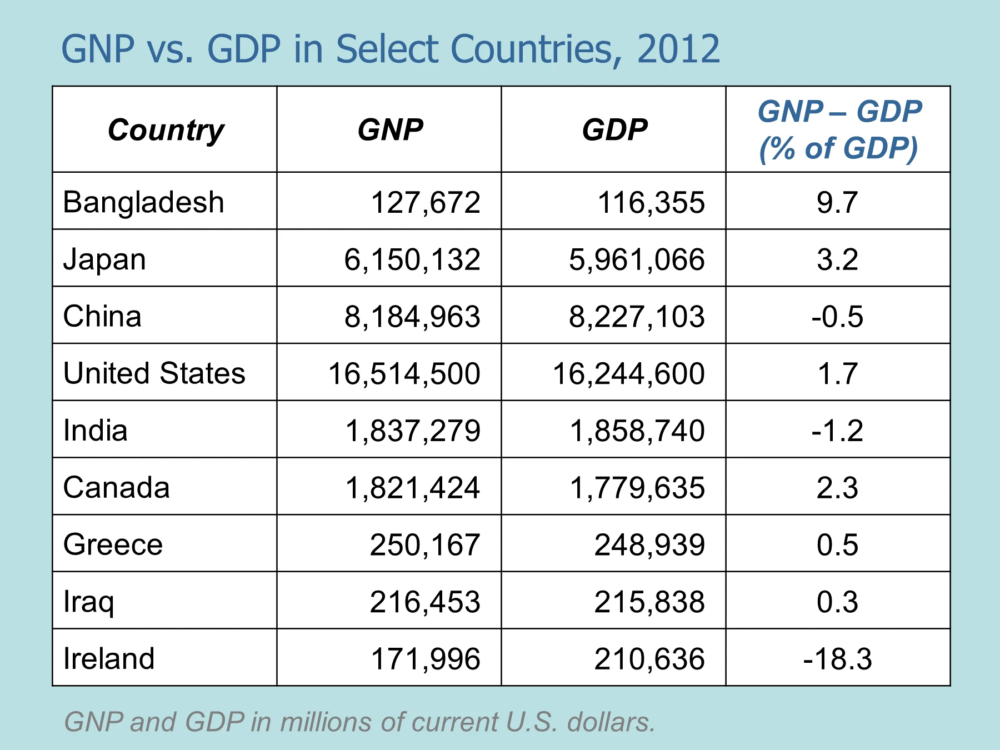
| 国家 | GNP | GDP | GNP − GDP（占 GDP 的 %） |
|---|---|---|---|
| 孟加拉国 | 127,672 | 116,355 | 9.7 |
| 日本 | 6,150,132 | 5,961,066 | 3.2 |
| 中国 | 8,184,963 | 8,227,103 | −0.5 |
| 美国 | 16,514,500 | 16,244,600 | 1.7 |
| 印度 | 1,837,279 | 1,858,740 | −1.2 |
| 加拿大 | 1,821,424 | 1,779,635 | 2.3 |
| 希腊 | 250,167 | 248,939 | 0.5 |
| 伊拉克 | 216,453 | 215,838 | 0.3 |
| 爱尔兰 | 171,996 | 210,636 | −18.3 |
GNP 与 GDP 均以当年美元计价，单位为百万美元。
九个国家排在一起，差额从 −18.3% 到 +9.7%，跨度远大于多数人的预期。读法是把差额翻译成一句人话：爱尔兰的 GDP 比 GNP 大 18.3%，意味着这块土地上产出的近五分之一作为利润和股息付给了外国所有者。这个数字对应它作为跨国企业欧洲总部的地位——大量知识产权和销售合同落在爱尔兰，产出记在这里，所有者在外。
孟加拉国 +9.7%，方向相反，量级相近。解释是劳务输出：大量国民在海湾和东南亚工作，工资汇回，计入 GNP 而不计入 GDP。日本 +3.2% 来自长期积累的海外净资产，属于资本输出型。美国 +1.7%，海外投资收益略多于付给外国投资者的部分。
中国 −0.5%、印度 −1.2%，都在零附近小幅偏负，符合「吸引外资较多、同时开始对外投资」的阶段特征。希腊与伊拉克接近零，说明要素流动规模相对经济总量不大。
这张表的用处不是记住具体数字，而是建立一种直觉：GDP 与 GNP 的差额衡量的是一国在要素市场上的净头寸。它与贸易顺差不是一回事，两者可以符号相反；它与经济规模也没有关系：爱尔兰的经济总量不到美国的百分之二，差额比例却是全表最大的。
How to interpret the numbers in this table:
In Japan, GNP is 3.2% bigger than GDP. This means that the income earned by all Japanese citizens is 3.2% larger than the value of production occurring within Japan’s borders.
In India, GNP is 1.2% smaller than GDP. This means that 1.2% of all the income earned in India leaves the country and is paid to foreigners.
In Ireland, 18.3% of the value of domestic production is paid to foreigners.
Teaching suggestion:
Point out a few countries with positive numbers. Ask your students to take a moment to think of possible reasons why GNP might exceed GDP in a country, and write them down. Point out a few countries with negative numbers. Ask your students to take a moment to think of possible reasons why a country’s GDP might be bigger than its GNP, and write them down. After students have had a chance to think of some reasons, ask for volunteers. (Better yet, have them pair up and compare answers with a classmate before volunteering their answers to the class.)
Reasons GNP may exceed GDP:
Country has done a lot of lending or investment overseas and is earning lots of income from these foreign investments (income on nationally owned capital located abroad).
A significant number of citizens have left the country to work overseas; their income is counted in GNP, not GDP.
Reasons GDP may exceed GNP:
Country has done a lot of borrowing from abroad, or foreigners have done a lot of investment in the country (income earned by foreign-owned domestically located capital).
Country has a large immigrant labor force.
If one of your students asks a question like “Why is the figure for country X so negative?” or otherwise inquires into the particular circumstances of a country’s figure, you may refer them to the CIA World Factbook for more details on any of these countries.
Source: World Development Indicators, World Bank.
http://datacatalog.worldbank.org/
At the time I write this (June 2014), the latest available GNP figures are for 2012.
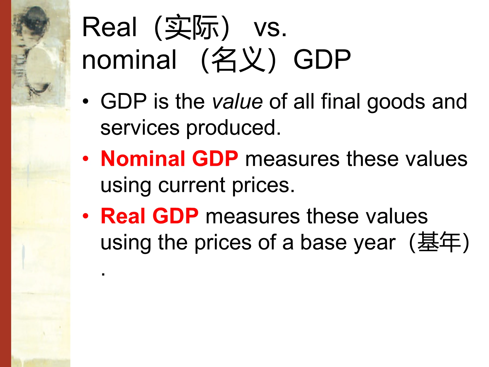
GDP 是生产出来的全部最终物品与服务的价值。
名义 GDP用当期价格衡量这些价值。
实际 GDP用基年的价格衡量这些价值。
名义 GDP 用当年的价格，实际 GDP 用某一基年的价格。两者的差别不在统计了什么，而在用什么尺子量。同样的 1,000 万辆汽车，按今年的价格算出来比按十年前的基年价格算出来大得多，车却一辆没多。
选一个基年，等于把那一年的价格结构固定下来当尺子。由此得到一条读表时的自检规则：基年的实际 GDP 与名义 GDP 必然相等。看到两个数在某一年重合，那一年就是基年；看到实际值在基年之前高于名义值，也符合「价格总体上涨」的常识。
这条规则还有一层推论：更换基年会改变所有年份的实际 GDP 数值，增长率也随之略有变化，因为权重跟着换了，但趋势不变。所以跨年比较增长率比比较水平值更稳健，而跨研究比较水平值必须先核对基年。
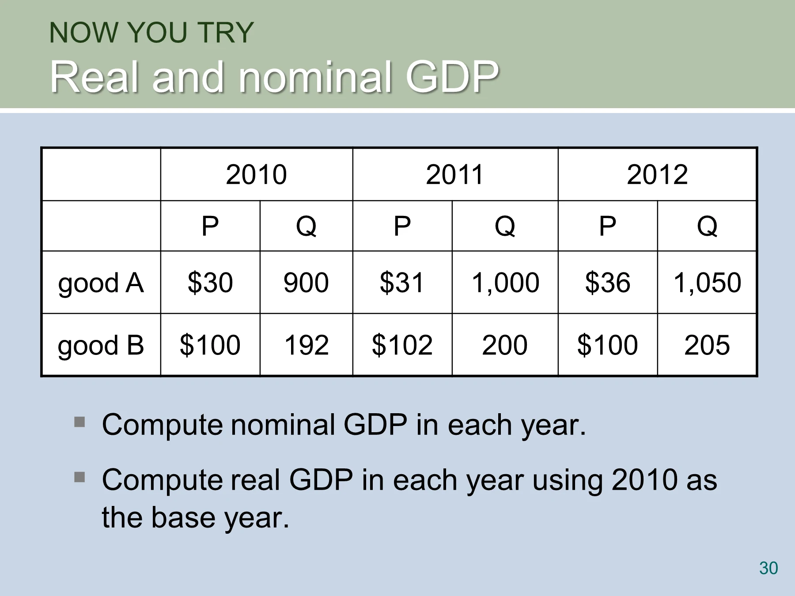
| 2010 | 2011 | 2012 | ||||
|---|---|---|---|---|---|---|
| P | Q | P | Q | P | Q | |
| 商品 A | $30 | 900 | $31 | 1,000 | $36 | 1,050 |
| 商品 B | $100 | 192 | $102 | 200 | $100 | 205 |
计算各年的名义 GDP。
以 2010 年为基年，计算各年的实际 GDP。
先算名义：每年用自己的价格乘自己的数量。再算实际：每年都用 2010 年的价格乘当年的数量。两组数字的差别只在价格，数量完全相同，所以两者的差额就是价格变动的贡献。
动手时留意一个细节：商品 B 的价格在 2012 年回落到 100，比 2011 年还低。这意味着 2012 年的价格变化不是「普涨」，而是结构性的。遇到这种情形，先算总账，再看结构，否则容易被单个商品的价格方向带偏。
This slide (and a few of the following ones) contain exercises that you can have your students do in class for immediate reinforcement of the material.
This problem requires calculators. If most of your students do not have calculators, consider distributing copies of this slide for a homework exercise. Or, just have them write down the expressions that they would enter into a calculator if they had calculators, i.e., Nominal GDP in 2010 = $30 x 900 + $100 x 192.
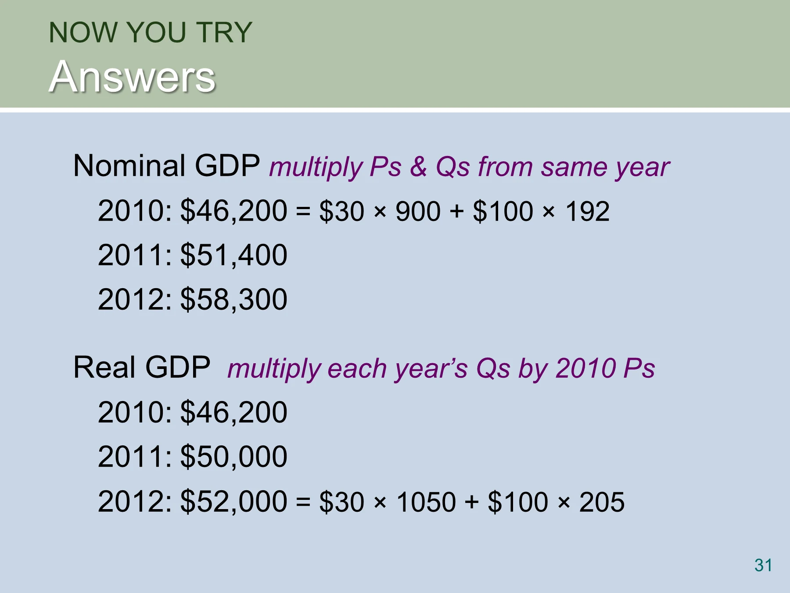
名义 GDP：同年的价格乘同年的数量
2010：$46,200 ＝ $30 × 900 ＋ $100 × 192
2011：$51,400
2012：$58,300
实际 GDP：各年的数量乘 2010 年的价格
2010：$46,200
2011：$50,000
2012：$52,000 ＝ $30 × 1050 ＋ $100 × 205
名义 GDP 从 46,200 涨到 51,400，涨幅 11.3%；实际 GDP 从 46,200 涨到 50,000，涨幅 8.2%。差的三个百分点是价格上涨的贡献。2011 到 2012 更明显：名义涨 13.4%，实际只涨 4.0%，价格贡献九个点。
这个分解可以用后面的百分比技巧直接看出：名义 GDP 是价格乘数量，其变化率约等于价格变化率加数量变化率；实际 GDP 固定了价格，其变化率就是数量变化率。两者相减即得价格变化率，这正是平减指数要做的事。
再看结构：2011 年两种商品的价格都涨（30→31，100→102），所以名义增速高于实际。2012 年 B 的价格回落到 100，A 涨到 36，涨幅 16%，而 A 的数量也增加了 5%，两股力量叠加，名义增速被推到 13.4%。单个商品的价格方向与总价格水平的方向，可以不一致。
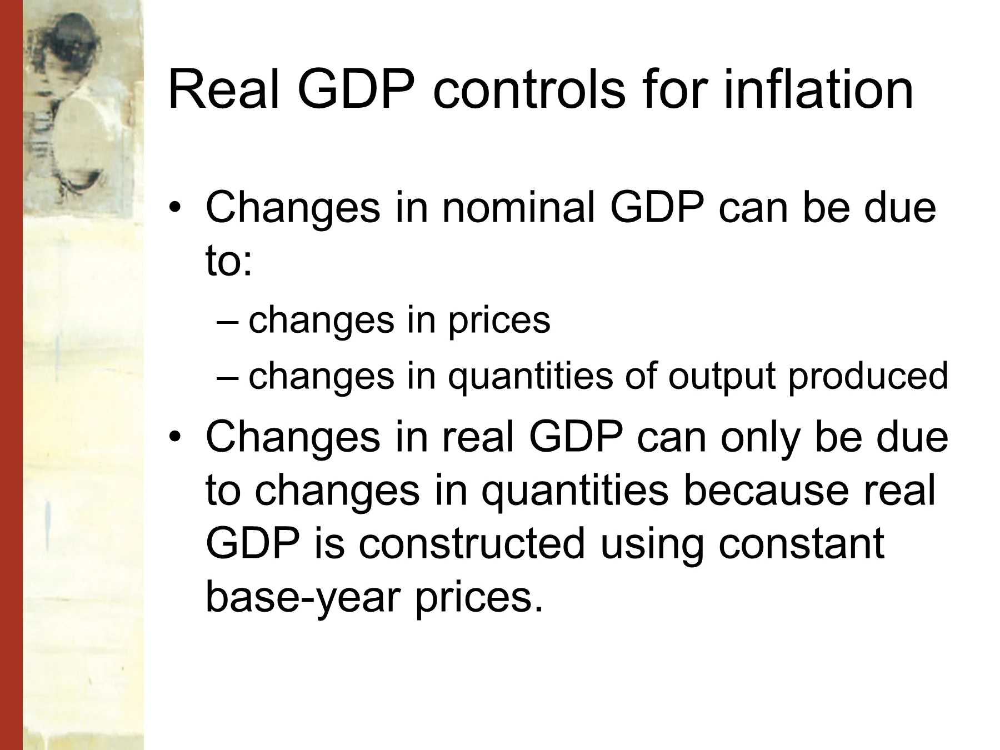
名义 GDP 的变动可能来自：
实际 GDP 的变动只可能来自数量的变化，因为实际 GDP 是用不变的基年价格构造的。
名义 GDP 的变化可以来自价格，也可以来自数量；实际 GDP 的变化只可能来自数量，因为价格被固定在基年。这就是「剔除通胀」的确切含义：不是把通胀减掉，而是换一把不动的尺子重新量一遍。
换尺子有代价。基年定得越远，基年价格与当期价格结构偏离越大，实际 GDP 的增速就越失真。极端情形下，某个商品的价格相对其他商品暴跌而产量暴增，固定基年会用旧的高价给它记一个巨大的产值，把增长率抬得离谱。这正是后面环比加权要解决的问题。
「实际 GDP 增长 6%」不等于「每个产品的产量都增长 6%」。它是加权平均，权重是基年价格。产量结构变化会被折算进这个总数，而折算的方式依赖基年的选择。
Suppose from 2010 to 2011, nominal GDP rises by 10%. Some of this growth could be due to price increases, because an increase in the price of output causes an increase in the value of output, even if the real quantity remains the same.
Hence, to control for inflation, we use real GDP. Remember, real GDP is the value of output using constant base-year prices. If real GDP grows by 6% from 2010 to 2011, we can be sure that all of this growth is due to an increase in the economy’s actual production of goods and services, because the same prices are used to construct real GDP in 2010 and 2011.
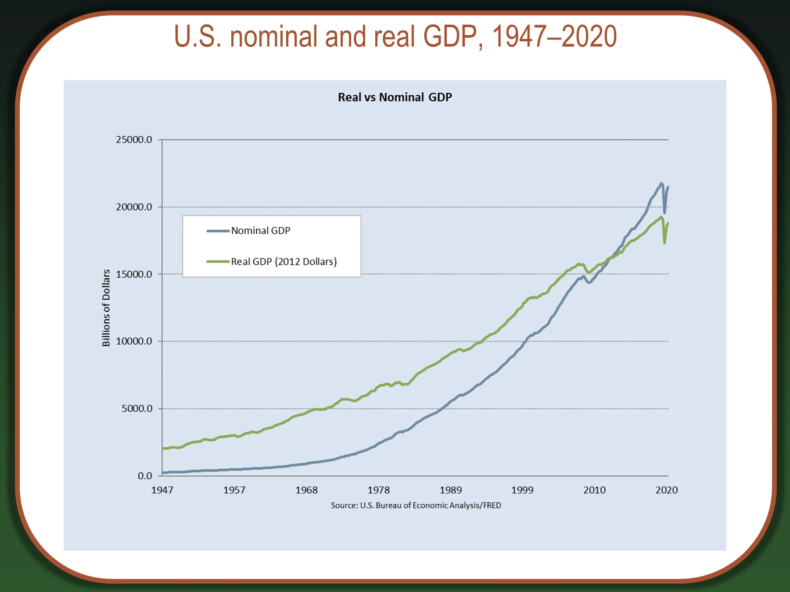
两条序列：名义 GDP 与实际 GDP（以 2012 年为基年）。
图中 横轴为年份，纵轴为 GDP 规模。一条较陡的曲线为名义 GDP，一条较平的为实际 GDP。两条线在 2012 年相交。
两条线在 2012 年相交，那一年是基年：实际 GDP 与名义 GDP 用同一套价格计算，必然相等。交点左侧实际高于名义，右侧名义高于实际。
原因是价格总体在涨。把 1975 年的产量按 2012 年的高价折算，得到的数大于按 1975 年低价算出的数，所以 1975 年的实际 GDP 高于名义 GDP；2012 年之后反过来，把近年的产量按 2012 年的较低价格折算，得到的数小于按当年价格算出的数。
两条线的斜率差就是通胀率。名义线更陡，因为它在数量增长之外还叠了价格增长。读这类图，顺序是先找交点定基年，再比斜率读通胀，最后才看水平值。直接从水平值比较「哪一年更大」，得到的结论没有意义。
图中名义线在 1970 年代中后期和 1980 年代初明显加速，对应那两轮高通胀；实际线在那些年份平坦得多。同一段时间，两种读法给出完全不同的故事，这是区分名义与实际最实际的理由。
Notice that nominal GDP is steeper than real GDP. That’s because prices generally rise over time. So, nominal GDP grows at a faster rate than real GDP.
If you’re like me, you might ask students if they know why the two lines cross in 2012.
Answer: 2012 is the base year for this real GDP data, so real GDP = nominal GDP in 2012 only.
Before 2009, real GDP > nominal GDP, while after 2009, real GDP < nominal GDP. This is intuitive if you think about it for a minute.
Take 1975. When the economy’s output of 1975 is measured in the (then) current prices, GDP is about $1.5 trillion. Between 1975 and 2005, most prices rose. Hence, if you value the country’s 1975 output using the higher prices of 2009 (to get real GDP), you get a bigger value than if you measure 1975’s output using the lower prices of 1975 (nominal GDP). This explains why real GDP is larger than nominal GDP in 1975 (as in most or all years before the base year).
Source: Bureau of Economic Analysis
Obtained from FRED
Series: “GDP” for nominal GDP, “GDPC1” for real GDP. Both are quarterly, seasonally adjusted series.
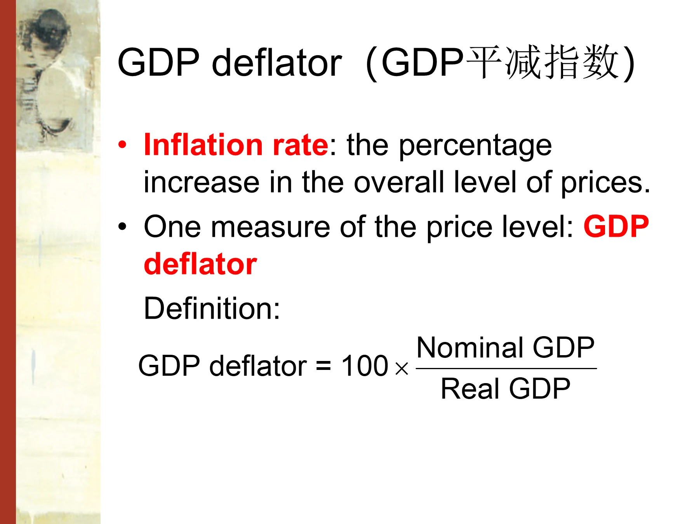
通货膨胀率：整体价格水平的百分比上升幅度。
衡量价格水平的一种指标：GDP 平减指数
定义：
GDP 平减指数 ＝ 100 × 名义 GDP / 实际 GDP
定义只有一行：分子用当年价格，分母用基年价格，比值就是「今年的价格相对基年贵了多少」。乘 100 只是为了把基年定成 100，方便读数。
名字里的「平减」是用途：拿名义 GDP 除以它再乘 100，就得到实际 GDP，等于把价格因素平掉。任何名义序列都可以用对应的价格指数这样处理，比如用 CPI 把名义工资折成实际工资。
它是覆盖最广的物价指数——经济中生产的每一样最终产品都在里面，权重随产出结构自动变化。这个特点既是优点也是缺点：全面，但包含了机器设备、武器这些家庭根本不买的东西，用它衡量生活成本会跑偏。平减指数衡量的是「生产出来的东西贵了多少」，不是「生活贵了多少」。
After revealing the first bullet point, mention that there are several measures of the overall price level. Your students are probably familiar with one of them—the CPI, which will be covered shortly. For now, though, we learn about a different one <reveal next bullet point>, the GDP deflator.
The GDP deflator is so named because it is used to deflate (remove the effects of inflation from) GDP and other economic variables.
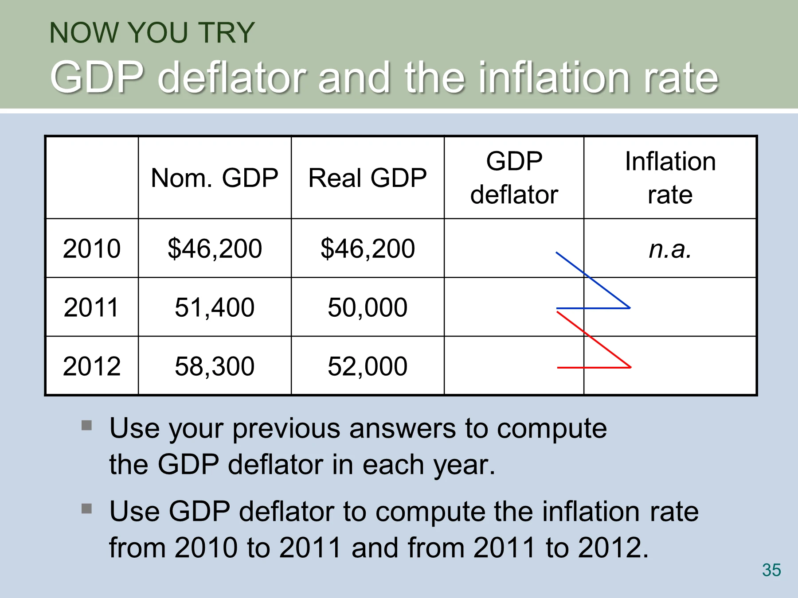
| 名义 GDP | 实际 GDP | GDP 平减指数 | 通胀率 | |
|---|---|---|---|---|
| 2010 | $46,200 | $46,200 | n.a. | |
| 2011 | 51,400 | 50,000 | ||
| 2012 | 58,300 | 52,000 |
用前面的答案计算各年的 GDP 平减指数。
再用平减指数计算 2010 到 2011 年、2011 到 2012 年的通货膨胀率。
把上一组数字代进定义式即可。通胀率是平减指数的百分比变化，第一年没有上一期，记为 n.a.。注意分母是上一年的平减指数，不是 100——这一点在做第二年的时候最容易写错。
算完可以做一个自检：102.8 的意思是 2011 年这一篮子最终产品的价格比 2010 年贵 2.8%，与实际 GDP 增长了多少无关。若某年名义与实际同比例增长，平减指数不变、通胀为零，这正是「价格因素被完全剔除」的判据。
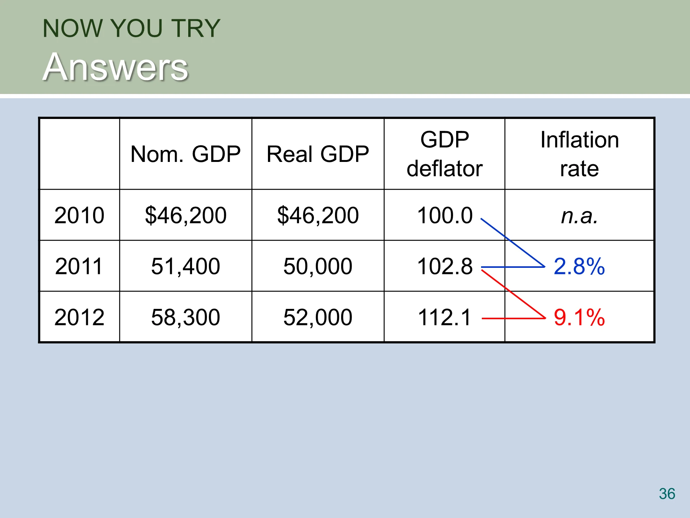
| 名义 GDP | 实际 GDP | GDP 平减指数 | 通胀率 | |
|---|---|---|---|---|
| 2010 | $46,200 | $46,200 | 100.0 | n.a. |
| 2011 | 51,400 | 50,000 | 102.8 | 2.8% |
| 2012 | 58,300 | 52,000 | 112.1 | 9.1% |
2011 年通胀 2.8%，2012 年 9.1%。后者明显偏高，原因是商品 A 的价格从 31 跳到 36，涨幅 16%，而 A 在实际 GDP 中的权重不小（2011 年 A 的产值占实际 GDP 的六成）。
这个例子说明平减指数对权重大、涨幅大的商品很敏感，也说明「平均物价」是加权的结果，不是简单平均。若把两种商品的涨幅（16% 和 −2%）简单平均，会得到 7%，与 9.1% 有明显差距。
把两年连起来看，2012 年的价格水平比 2010 年高 12.1%，而两年的通胀率相加是 11.9%，差额来自复利。年数一多，这个差额会变得不可忽略：每年 3%、十年合计 34.4%，而 3% 乘 10 只有 30%。
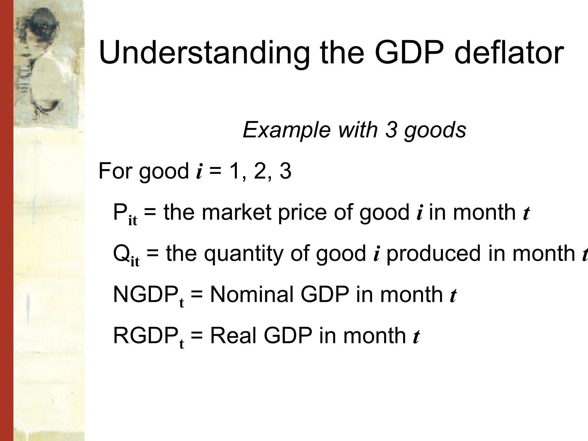
三个商品的例子
对商品 i ＝ 1, 2, 3：
Pit ＝ 商品 i 在 t 月的市场价格
Qit ＝ 商品 i 在 t 月的产量
NGDPt ＝ t 月的名义 GDP
RGDPt ＝ t 月的实际 GDP
定义式写成「100 × 名义 / 实际」，看不出它为什么能代表「平均价格水平」。分子分母各自是一个加总，加总里混着价格和数量，比值凭什么只剩下价格？
把它写成三个商品的求和，问题就清楚了：分母用的是当年的数量，与分子同一组数量，数量在比值里被部分消掉，剩下的结构正好是各商品相对价格的加权组合。
This slide and the next one use simple algebra to show that the GDP deflator is a weighted average of prices; the weight on each price reflects that good’s relative importance in real GDP.
This material is not in the textbook, so I have hidden this slide—it will not automatically display when viewing this PowerPoint presentation in Slide Show mode. If you wish to include this material, please unhide this slide and the next one, by unselecting “Hide Slide” on the Slide Show drop-down menu.
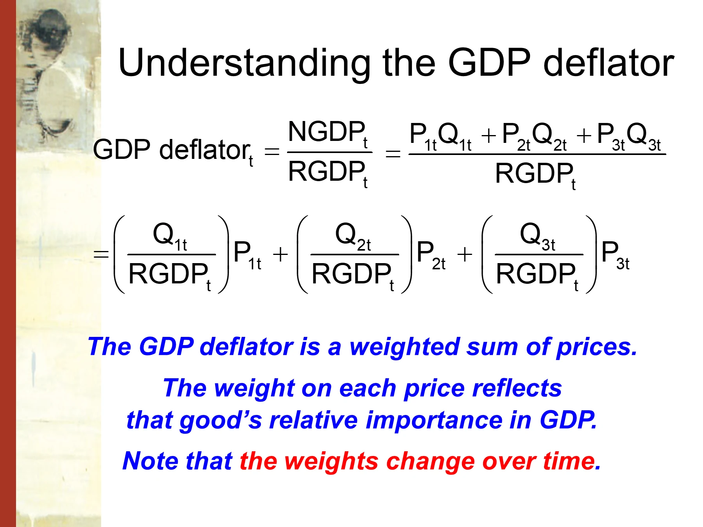
GDP 平减指数是价格的加权和。
每个价格的权重反映该商品在 GDP 中的相对重要性。
注意：权重随时间变化。
平减指数t ＝ 100 × Σ PitQit / Σ Pi0Qit
把定义式的分子分母都写成求和：分子是 ΣPitQit，分母是 ΣPi0Qit。注意分母用的是当年数量，不是基年数量——这一点是平减指数与 CPI 的分水岭，后面会看到 CPI 的分母用的是固定篮子。
把每一项按商品拆开，分子分母同除以分母：
平减指数t ＝ Σ [ (Pit/Pi0) × (Pi0Qit / Σ Pi0Qit) ] × 100
括号里第二项是商品 i 按基年价格计算的产值占实际 GDP 的比重，非负且加总为 1。所以平减指数是各商品相对价格（Pit/Pi0）的加权平均，权重是基年价格下的产值份额。价格涨得多的商品，如果份额大，就把指数推得高。
权重随时间变化：Qit 每年不同，份额随之改变。这与 CPI 的固定篮子形成对照。也正因为份额每年变，平减指数会自动给降价多的商品降低权重，从而部分避免了替代偏误——消费者转向便宜商品，这个商品在当期产值中的份额上升，但它的相对价格低，对指数的拉动有限。
若把式子写成 Σ Pit × (Qit/RGDPt)，系数是 Qit/RGDPt，量纲是 1/价格，加总不为 1，所以严格说是「加权和」而非「加权平均」。两种写法代数等价，只是归一化的方式不同；上面用相对价格的那一种，权重才真正加总为 1。
(I have omitted the “100 x” from the formula for the GDP deflator so that this slide remains legible.)
The formula for the GDP deflator is 100*NGDP/RGDP. It’s not obvious to most students that this is a measure of the average level of prices. But, using some simple algebra, this slide shows that the GDP deflator really is a weighted average of prices.
Note: Because the weights don’t all sum to 1, the GDP deflator is a weighted sum, not a weighted average.
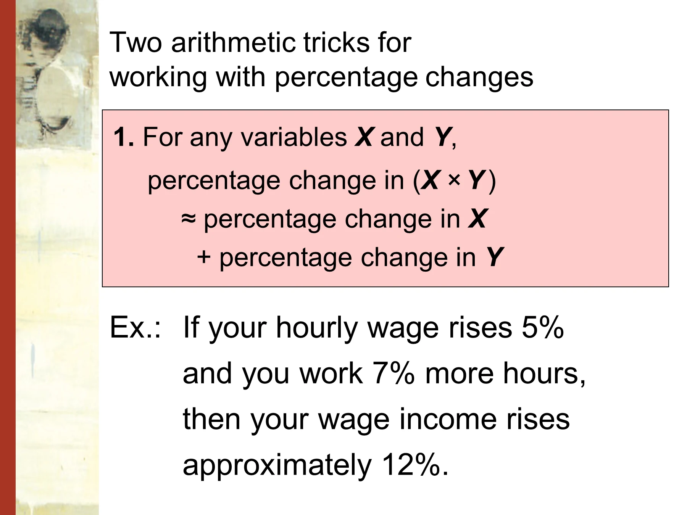
1. 对任意变量 X 与 Y，
(X × Y) 的百分比变化 ≈ X 的百分比变化 ＋ Y 的百分比变化
例：若你的小时工资上涨 5%，工作小时数增加 7%，那么你的工资收入大约上涨 12%。
技巧来自一阶近似。设 X 增长 x，Y 增长 y，则 XY 的增长为 (1＋x)(1＋y) − 1 ＝ x ＋ y ＋ xy。交叉项 xy 在 x、y 都很小时可以忽略，于是乘积的变化率约等于变化率之和。
例子：时薪涨 5%、工时增 7%，工资收入增长约 12%，精确值是 1.05 × 1.07 − 1 ＝ 12.35%。误差 0.35 个百分点，正是被丢掉的交叉项 0.05 × 0.07。
这个近似在增长率是个位数时很好用，两位数时要慎用。20% 乘 20% 的交叉项就有 4 个百分点，误差不能忽略。判断能不能用，先估一下 xy 的大小。
用它的场合有一个共同点：被解释的量本身是两个变量的乘积，而两个因子的增长率各自可知。工资收入、销售收入、名义 GDP 都属于这一类。反过来，若已知乘积的增长率和其中一个因子，也能反解另一个——平减指数要做的正是这件事。
These handy arithmetic tricks will be useful in many different contexts later in this book. For example, in the Quantity Theory of Money in Chapter 4, they help us understand how the Quantity Equation, MV = PY, gives us a relation between the rates of inflation, money growth, and GDP growth.
The example on this slide uses
wage income = (hourly wage) x (number of hours worked)
Another example would be
revenue = price x quantity
Students will see many more examples later in the textbook.
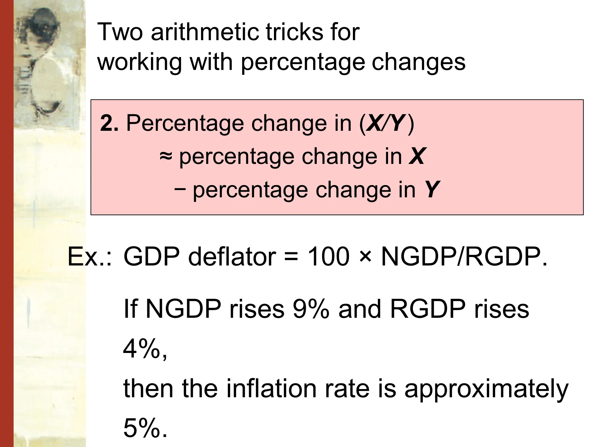
2. (X / Y) 的百分比变化 ≈ X 的百分比变化 − Y 的百分比变化
例：GDP 平减指数 ＝ 100 × NGDP / RGDP。
若名义 GDP 上涨 9%，实际 GDP 上涨 4%，则通货膨胀率约为 5%。
除法是同一近似的另一面。因为 1/(1＋y) ≈ 1 − y，所以 (1＋x)/(1＋y) ≈ (1＋x)(1−y) ≈ 1 ＋ x − y。比值的增长率约等于分子增长率减分母增长率。
例子：名义 GDP 涨 9%、实际 GDP 涨 4%，平减指数涨约 5%，精确值 1.09/1.04 − 1 ＝ 4.81%。这个技巧在后面讨论货币数量论时反复用到：MV ＝ PY 两边取变化率，得到「货币增长 ＋ 速度变化 ＝ 通胀 ＋ 产出增长」。
符号最容易出错。分母增长时结果下降：实际工资 ＝ 名义工资 / 物价，名义工资涨 10%、物价涨 6%，实际工资涨约 4%，不是 16%。做题时先想「这个比值应该变大还是变小」，再决定加减。
Again, we will see uses for this in many different contexts later in the textbook. For example, if your wage rises 10% while prices rise 6%, then your real wage – the purchasing power of your wage – rises by about 4%, because
real wage = (nominal wage)/(price level)
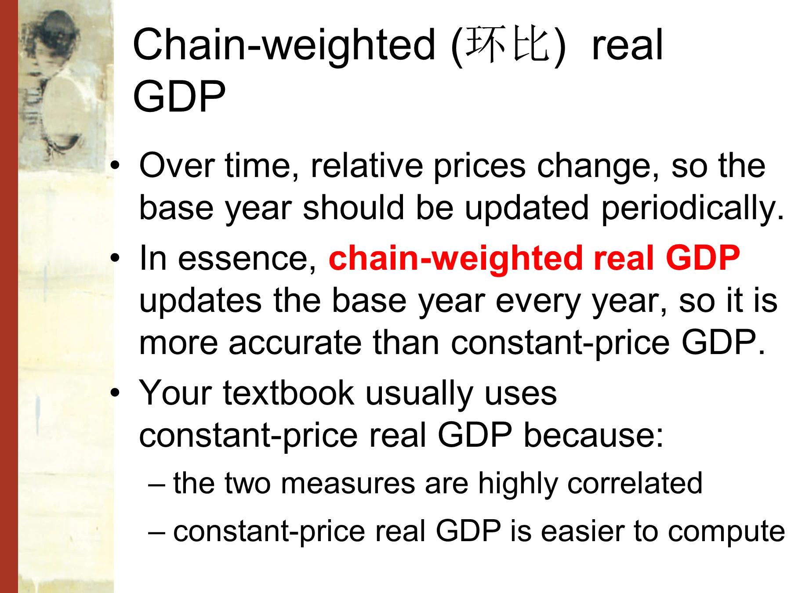
随着时间推移，相对价格会变化，因此基年应当定期更新。
本质上，环比加权的实际 GDP 每年都更新基年，因此比固定价格的实际 GDP 更准确。
教材通常使用固定价格的实际 GDP，因为：
固定基年的问题在于相对价格会变。假设基年手机很贵、粮食便宜，基年权重就给手机很高；十年后手机便宜了、产量翻了几倍，固定权重仍按基年的高价给手机记产值，实际 GDP 的增速就被高估。这是替代偏误在 GDP 上的版本，与后面 CPI 的替代偏误同源。
环比加权的做法是每年换一次基年。先算第一年到第二年的实际增长，用的是第一年的价格；再算第二年到第三年的增长，用的是第二年的价格；然后把各年的环比增长率连乘起来，得到一条链。链上每一环只用相邻两年的价格，价格结构不会偏离太远，误差不会逐年累积。
代价是链式指数不满足可加性：各分项的实际值加总不等于总体的实际值，因为各分项的链基年不同。做结构分析时这很麻烦，也是很多国家仍同时公布固定基年数据的原因。
教材用固定价格版本，理由是两种度量高度相关，而固定价格的算法简单得多，手算就能完成。这个取舍在教学里合理，在实证工作里未必：美国、欧盟的官方实际 GDP 现在都是链式的，用固定价格数据做长期增长核算会系统性高估或低估某些部门。
Since constant-price GDP is easier to understand and compute, and because the two measures of real GDP are so highly correlated, this textbook emphasizes the constant-price version of real GDP.
However, if this topic is important to you and your students, you should have them carefully read pp. 25-26, and give them one or two exercises requiring students to compute or compare constant-price and chain-weighted real GDP.
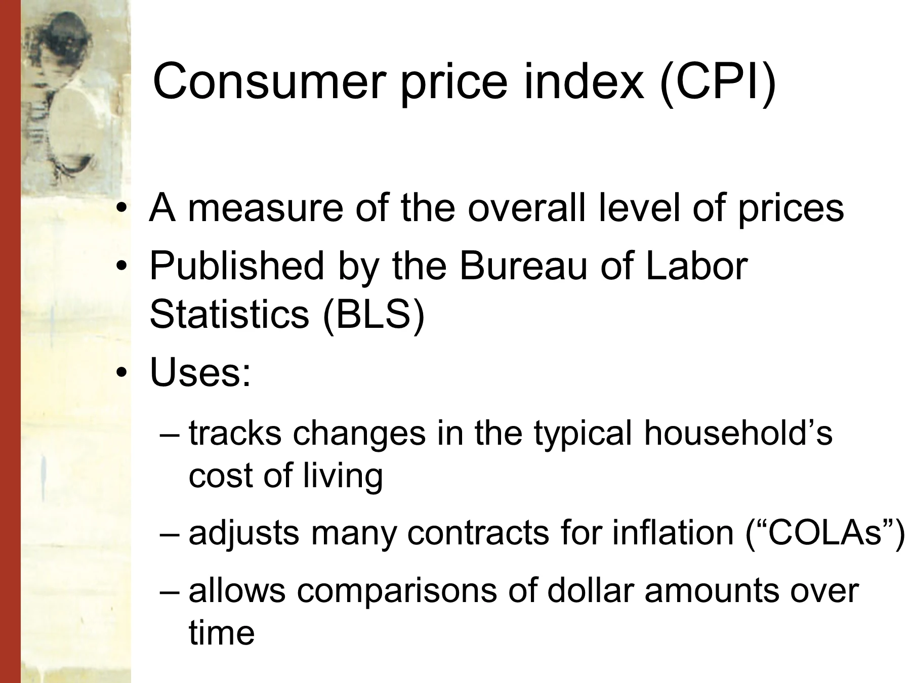
衡量整体价格水平的一种指标。
由劳工统计局（BLS）发布。
用途：
CPI 是另一把尺子，量的是生活成本而不是总产出。它只包含典型家庭购买的一篮子商品，因此不含机器设备、武器、企业采购。发布机构是劳工统计局。
三个用途都建立在「同一把尺子」上。指数化合同（COLA）把工资、养老金与 CPI 挂钩，通胀自动得到补偿；跨期比较把不同年份的金额折算到同一年，公式是：今年的等值金额 ＝ 旧年金额 × CPI今年 / CPI旧年。1975 年的年薪 1 万美元，按 CPI 折算到今天可能是 5 万美元，名义上翻了五倍，实际购买力未必提高多少。
折算时分子分母最容易搞反。检验办法只有一条：物价上涨时，旧年的金额折算到今天应该变大。若算出来变小，就是除反了。
Regarding the comparison of dollar figures from different years:
If we want to know whether the average college graduate today is better off than the average college graduate of 1975, we can’t simply compare the nominal salaries because the cost of living is so much higher now than in 1975. We can use the CPI to express the 1975 salary in “current dollars,” i.e., what it would be worth at today’s prices.
Also: when the price of oil (and hence gasoline) shot up in 2000, some in the news reported that oil prices were even higher than in the 1970s. This was true, but only in nominal terms. If you use the CPI to adjust for inflation, the highest oil price in 2000 is still substantially less than the highest oil prices of the 1970s.
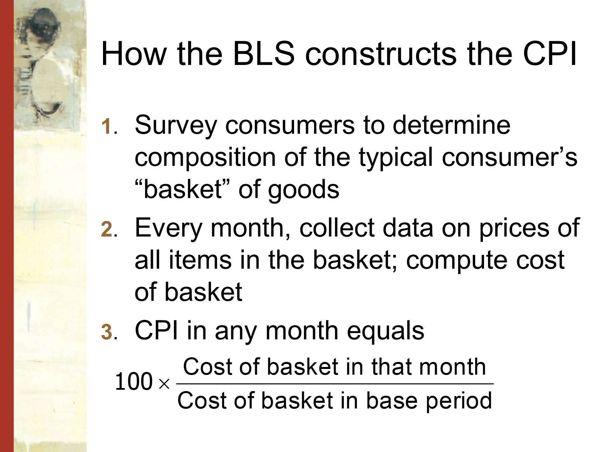
1. 调查消费者，确定典型消费者「篮子」中商品的构成。
2. 每月采集篮子中所有商品的价格数据，计算篮子的成本。
3. 任一月度的 CPI 等于
CPIt ＝ 100 × （Σ PitCi）/（Σ Pi0Ci）
三步：定篮子、采价格、算比值。篮子的构成来自消费者支出调查，反映典型家庭的支出结构；价格每月采集，覆盖全国城市；指数等于当期篮子成本除以基期篮子成本再乘 100。
注意 Ci 是固定的数量，不随年份变化。这个固定是 CPI 的定义特征，也是它全部偏误的来源——它假设家庭在价格变化后仍然买同样的东西。
还有一层：篮子的构成本身也要更新，劳工统计局大约每 2 年修订一次权重，但两次修订之间，篮子是锁死的。所以「固定」是相对的，指的是相对于月度价格变动而言。
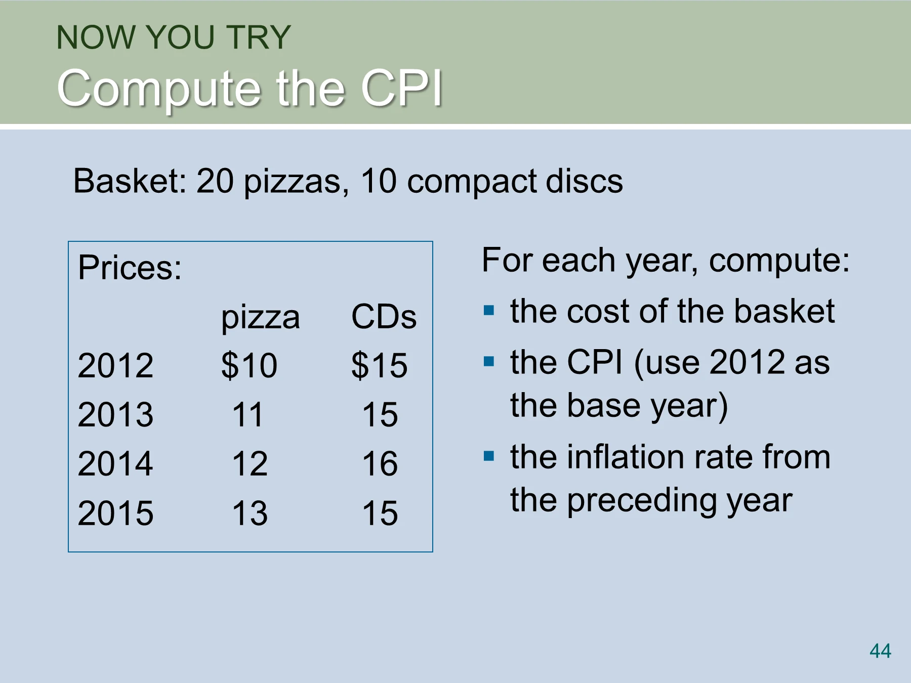
篮子：20 个披萨、10 张唱片。
对每一年，计算：
| 价格 | 披萨 | 唱片 |
|---|---|---|
| 2012 | $10 | $15 |
| 2013 | 11 | 15 |
| 2014 | 12 | 16 |
| 2015 | 13 | 15 |
先算每年的篮子成本，再除以基年成本乘 100。2013 年披萨涨 1 美元、唱片价格不变，成本增加 20 美元；2014 年两者都涨，成本增加 30 美元；2015 年披萨再涨 1 美元、唱片跌 1 美元，两股力量部分抵消。
2013 年可以顺手验算：披萨涨价使成本增加 20 × 1 ＝ 20 美元，唱片价格不变，成本从 350 升到 370，涨幅 5.7%。这个涨幅低于披萨自身 10% 的涨幅，因为披萨只占基期篮子成本的 57%。
2015 年这一格值得先猜后算。披萨涨了 8.3%，唱片跌了 6.25%，简单平均只有约 1%，而按篮子加权会得到明显更高的数。差别的来源就是权重。
From 2012 to 2013, it’s not obvious that the inflation rate will be positive (that the basket’s cost will increase): The price of pizza rises by $1, but the price of CDs falls by $1.
However, since the basket contains twice as many pizzas as CDs, a given change in the price of pizza will have a bigger impact on the basket’s cost (and CPI) than will the same price change in CDs.
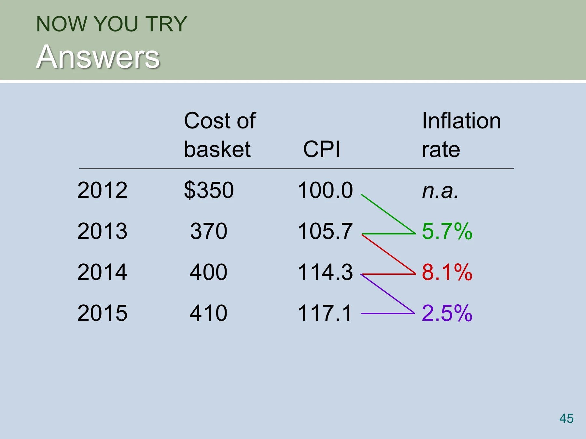
| 篮子成本 | CPI | 通胀率 | |
|---|---|---|---|
| 2012 | $350 | 100.0 | n.a. |
| 2013 | 370 | 105.7 | 5.7% |
| 2014 | 400 | 114.3 | 8.1% |
| 2015 | 410 | 117.1 | 2.5% |
CPI 依次为 100.0、105.7、114.3、117.1，通胀率 5.7%、8.1%、2.5%。2015 年这个数字最能说明加权的作用：披萨涨价 1 美元（涨 8.3%），唱片降价 1 美元（跌 6.25%），简单平均只有约 1%，而按篮子加权得到 2.5%——因为披萨在篮子里是唱片的两倍，基期支出份额是六成对四成。
这就是「物价指数是加权平均」的具体含义：涨价的商品权重大，指数就涨得多。它同时也是替代偏误的入口：真实家庭会在披萨变贵时多买唱片，固定篮子不允许这种调整，于是把生活成本的上升算高了。
把三个通胀率连起来看，从 5.7% 升到 8.1% 再回落到 2.5%，波动主要来自两种商品价格的相对变化，而不是所有价格同向变动。这说明指数层面的「通胀」是结构变化的结果，背后并没有一个统一的涨价潮。
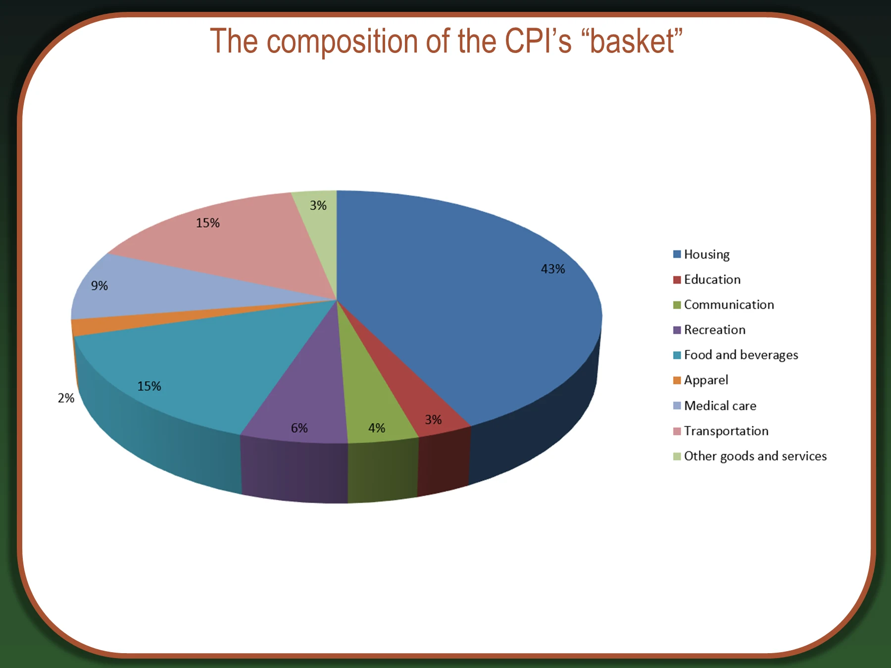
各分项占典型家庭总支出的百分比。
图中 饼图按支出类别分块，面积即权重。住房是最大的一块，交通、食品、医疗次之，其余为娱乐、教育、服装等项目。
这张饼图是 CPI 的骨架。住房是最大单项，接近四成（含自住房的推算租金）；交通、食品、医疗各占一成上下；其余是娱乐、教育、服装等。权重决定了 CPI 对哪类价格敏感：房租上涨通过住房项缓慢传导，汽油价格几乎立刻反映在交通项里。
权重是「典型家庭」的平均，不是每个人的。老年人医疗支出占比远高于平均，年轻人的住房支出占比更高，有孩子的家庭在教育和托育上花得更多。用同一个 CPI 给所有人做指数化，等于假设所有人的消费结构相同——这是 CPI 作为政策工具时的隐含假设，也是「CPI 是否高估了老年人生活成本」这类争论的来源。
还有一层技术细节：自住房的推算租金在住房项里占相当大的比重，而它的估算依赖市场租金的调查，房价本身并不直接进入 CPI。房价暴涨的年份，CPI 可能相当平静，这是两者长期背离的原因之一。
Each number is the percentage of the “typical” household’s total expenditure.
Ask students for examples of how the breakdown of their own expenditures differs from that of the typical household shown here. Then ask students how the typical elderly person’s expenditures might differ from those shown here. (This is relevant because the CPI is used to give Social Security COLAs to the elderly; however, the elderly spend a much larger fraction of their income on medical care, a category in which prices grow much faster than the CPI.)
The website listed below also gives a very fine disaggregation of each category, which enables students to compare their own spending on individual goods to that of the “typical” household.
Source: Bureau of Labor Statistics, http://www.bls.gov/news.release/cpi.t03.htm
U.S. city average, CPI-U.
Data in this graph are from Jan 2021.
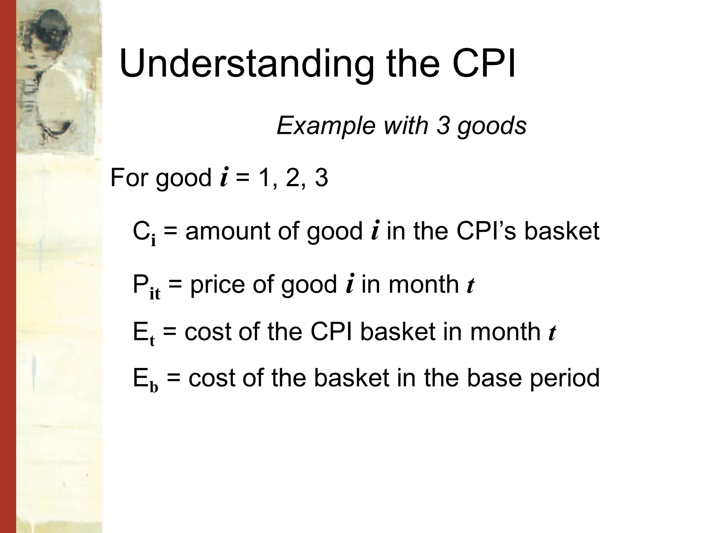
三个商品的例子
对商品 i ＝ 1, 2, 3：
Ci ＝ CPI 篮子中商品 i 的数量
Pit ＝ 商品 i 在 t 月的价格
Et ＝ t 月 CPI 篮子的成本
Eb ＝ 基期篮子的成本
符号与前面讲平减指数时几乎一样，只有一处关键差别：这里的 Ci 是篮子的数量，不带时间下标，因为它在所有月份都相同。平减指数用的是 Qit，每年不同。
用 E 表示篮子成本，取的是 expenditure 的首字母，因为篮子的成本就是买下这一篮东西要花的钱。把这个成本比展开，权重的来源就清楚了。
Eb 是基期的篮子成本。选哪一年做基期只影响指数的水平，不影响它的变化率，所以两个基期不同的 CPI 仍然可以比较增长率——跨国比较时常用的正是这一点。
The next slide uses simple algebra to show that the CPI is a weighted average of prices; the weight on each price reflects that good’s relative importance in the CPI basket. The algebra is very similar to that of an earlier slide that showed that the GDP deflator is a weighted average of prices.
I chose “E” to represent the cost of the basket because “E” stands for “Expenditure.”
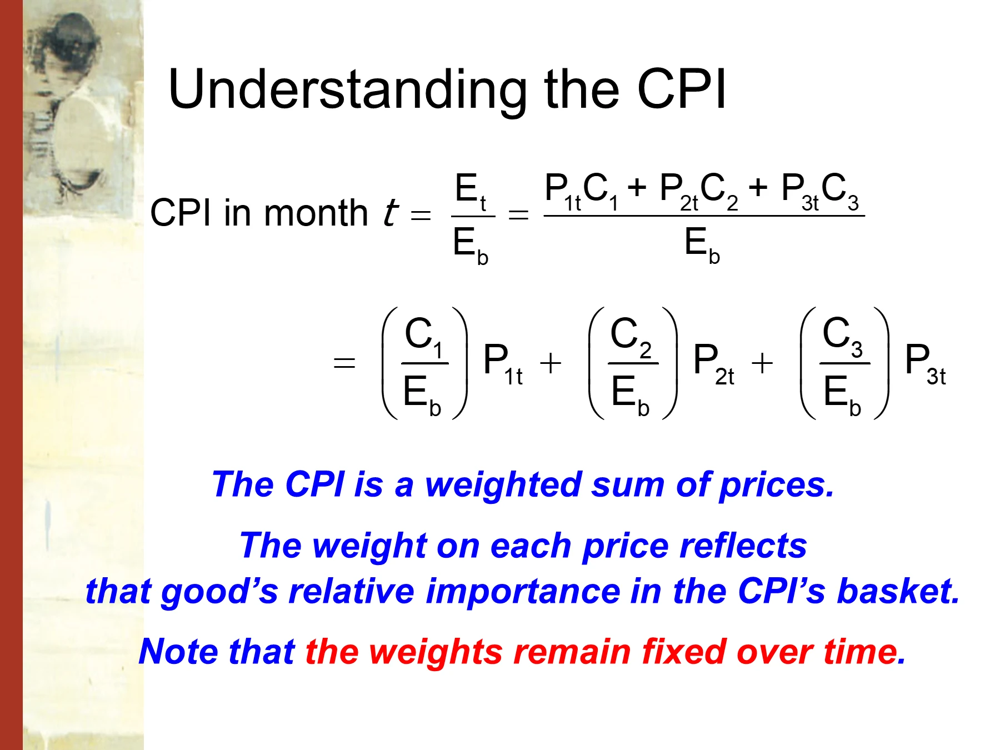
CPI 是价格的加权和。
每个价格的权重反映该商品在 CPI 篮子中的相对重要性。
注意：权重不随时间变化。
CPIt ＝ 100 × Σ PitCi / Σ Pi0Ci
推导与平减指数完全同构，只是把 Q 换成固定的 C。分子分母同除以分母，把每一项拆开：
CPIt ＝ Σ [ (Pit/Pi0) × (Pi0Ci / Σ Pi0Ci) ] × 100
权重是基期的支出份额，非负且加总为 1，不随时间变化。这是 CPI 与平减指数唯一的结构性差别，也是替代偏误的来源：权重固定意味着篮子固定，篮子固定意味着不承认消费者会换商品。
两者都是相对价格的加权平均，都乘以 100 把基期定为 100，都可以读成「今年比基年贵了多少」。区别只在权重怎么来、变不变。平减指数的权重每年随产量调整，CPI 的权重锁在基期。
这个差别有一个可观察的后果：当某类商品价格暴涨时，CPI 会持续给它高权重，指数被推得更高；平减指数的权重随当期产量调整，价格暴涨而产量萎缩的商品，份额被压低，对指数的拉动随之减弱。同样一轮涨价，两个指数给出的通胀读数可以差出零点几个百分点，逐年累积就是可观的分歧。
Note: Because the weights don’t all sum to 1, the CPI is a weighted sum, not a weighted average.
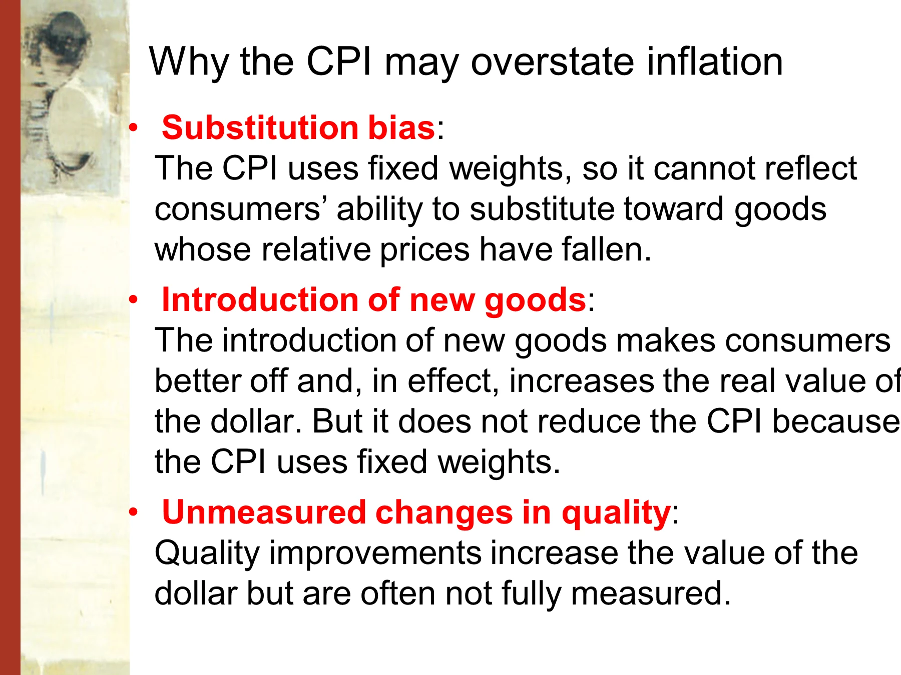
替代偏误：CPI 使用固定权重，因此无法反映消费者转向相对价格已下降的商品的这种能力。
新商品的引入：新商品的引入使消费者状况变好，实际上提高了美元的实体价值。但它不会降低 CPI，因为 CPI 使用固定权重。
质量变化未被衡量：质量改进提高了美元的价值，但往往没有被充分衡量。
三种偏误方向一致，机制各不相同。
替代偏误。CPI 的篮子固定，但消费者会替换。牛肉涨价，家庭改吃鸡肉；固定篮子仍按原来的牛肉数量计价，等于假设家庭没有做出任何调整。这种调整本可以减轻涨价带来的福利损失，指数却把它记为损失，于是高估。偏误的大小取决于替代弹性：商品之间越容易替换，高估越多；若某类商品几乎没有替代品，比如处方药，替代偏误就接近于零。
新商品偏误。新商品出现时不在基期篮子里，权重为零。但新商品往往大幅提升福利——手机在 2000 年还不存在，今天它替代了相机、地图、随身听、闹钟。这些收益没有进入指数，因为指数只跟踪老商品的价格，而老商品的价格可能因为竞争而上涨放缓甚至下跌，指数记录的是「同样的东西贵了多少」，不是「同样的钱能买到多少东西」。生活成本的下降被系统性地漏掉。
质量偏误。同一件商品的质量在变。今年的车比十年前更安全、更省油，价格也更高，CPI 把涨价全部记为通胀，没有扣除质量提升的部分。统计部门用特征价格法做调整，把价格拆成各项特征的隐含价格，但覆盖不全，服务类尤其难处理。
三者可以叠加，也可能相互抵消一部分。1995 年美国参议院任命的专家委员会（Boskin 委员会）估计合计高估约每年 1.1 个百分点，此后劳工统计局改进了抽样和算法，目前估计在 1 个百分点以内。这个量级听起来小，但复利三十年就是三成以上的购买力差异。
「高估」是相对于生活成本指数这个理想概念而言的。CPI 的设计目标是跟踪固定篮子的价格，从这个目标看它没有错；错在它常被当作生活成本指数使用。
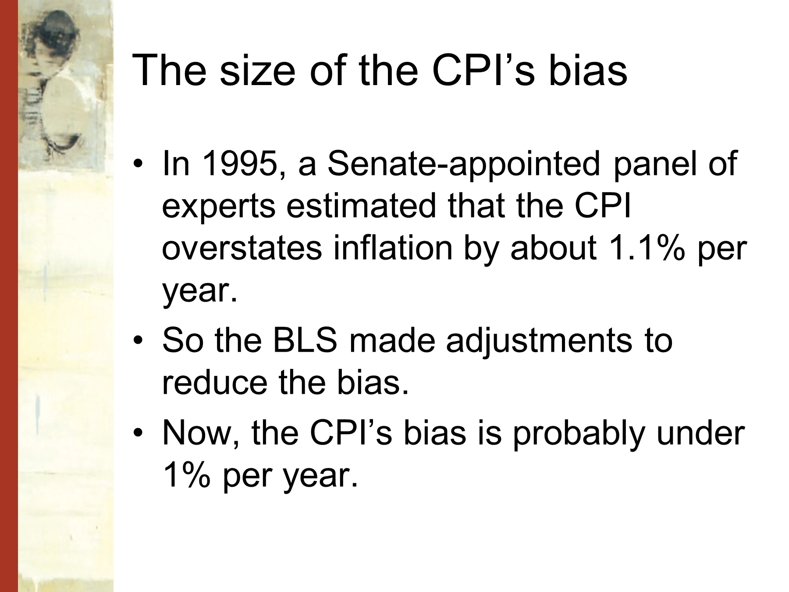
1995 年，一个由参议院任命的专家小组估计，CPI 每年高估通胀约 1.1%。
此后劳工统计局做出调整以减小偏误。
现在，CPI 的偏误可能低于每年 1%。
1.1 个百分点这个数字为什么重要：美国社会保障的 COLA 直接按 CPI 调整。若真实通胀比 CPI 低 1.1 个点，每年的调整就多给 1.1%，三十年后养老金水平比应得的高出三成以上，财政支出被系统性放大。反过来，若用 CPI 给工资指数化，实际工资会被系统性低估。
修正之后仍有偏误，因为替代与新商品无法完全消除。这也解释了为什么央行更愿意盯 PCE 和核心通胀：它们的构造方式对公式性偏误不那么敏感。
这里有一个一般性的教训：指数的偏误不是随机的，它有方向。随机误差可以通过扩大样本消除，方向性偏误不能，只能靠改变构造方法。
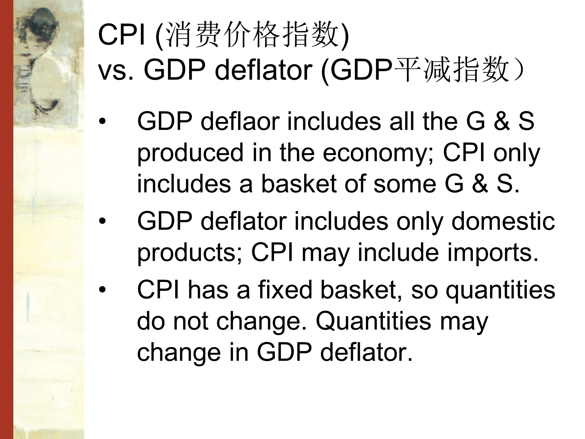
GDP 平减指数包含经济中生产的全部物品与服务；CPI 只包含其中一部分物品与服务的篮子。
GDP 平减指数只包含本国生产的产品；CPI 可能包含进口品。
CPI 的篮子固定，因此数量不变；GDP 平减指数中的数量可以变化。
三条差别，指向两种不同的用途。
覆盖范围：平减指数包含经济中生产的所有最终产品，投资品、政府购买都在内；CPI 只有消费者买的那一篮子。因此企业设备涨价会推高平减指数，却不进 CPI。
进口：CPI 包含进口消费品，平减指数不包含。油价上涨时，美国进口原油，CPI 里的汽油项立刻上升，而平减指数只反映国内生产的增加值，涨幅小得多。这是两者在 1970 年代和 2008 年分歧的主因。反过来，本币贬值会迅速推高 CPI，对平减指数的影响要经过国内生产成本才显现。
篮子：CPI 固定，平减指数随产出结构变化。前者产生替代偏误，后者不会，但后者会把投资品和出口的价格混进来，用它衡量生活成本同样不准。
没有哪个更「正确」，只有哪个更匹配问题。问生活成本变化，用 CPI；问整体物价水平与产出增长的关系，用平减指数；问货币政策该盯什么，用 PCE。三者的差别不是精度问题，是定义问题。
另一种价格水平指标：个人消费支出（PCE）平减指数，即名义消费支出与实际消费支出之比。
PCE 像 CPI 的地方：只包含消费支出；包含进口消费品。
PCE 像 GDP 平减指数的地方：「篮子」随时间变化。
美联储更偏好 PCE。
PCE 平减指数是名义消费支出与实际消费支出之比，覆盖的是家庭实际消费掉的商品与服务。它与 CPI 有一处实质差别：PCE 包括由雇主或保险支付的医疗费用，CPI 只统计家庭自己掏钱的部分。美国的医疗支出很大一块由保险和雇主承担，这条差别让 PCE 里医疗的权重远高于 CPI，而医疗价格长期涨得比平均快。
它同时具备两者的优点：像 CPI 一样只管消费、包含进口品；像平减指数一样权重随支出结构变化，不会因为固定篮子而高估。美联储在 2000 年前后把政策参照从 CPI 转向 PCE，理由正是这两条。
代价是口径更复杂、发布更晚、历史序列较短，公众也更不熟悉。所以政策沟通里常见「以 PCE 为主、CPI 为辅」的双轨表述，两者背离时要解释原因。
The reason the Fed prefers the PCE is that it has the positive attributes of both CPI (it includes only consumer spending) and the GDP deflator (the basket changes over time).
另一种通货膨胀指标，剔除食品与能源价格。
食品与能源价格在短期内波动剧烈。
有时被视为衡量潜在通胀趋势的更好指标。
核心 CPI 与核心 PCE 都存在。
核心通胀把食品和能源剔出去，理由不是它们不重要——家庭支出里占比不小——而是它们的价格由供给冲击主导，短期波动大且会回落。用总体通胀判断政策，容易被一次油价冲击误导。
代价是核心可能漏掉持续性冲击。若能源价格连续多年上涨，它会通过运输成本、化肥、供暖逐层传导进核心，此时「剔除」等于把趋势也剔掉了。所以央行看核心，但不只看核心。
核心通胀不是「真实通胀」，它只是一个波动更小的统计量。两者长期趋同，短期可以背离很久。判断政策立场时，看核心；判断家庭感受时，看总体。
三条价格指数序列的对比。
图中 横轴为年份，纵轴为指数值（基期 ＝ 100）。三条线长期同向上升，在能源冲击与政策转折的年份出现明显分歧，CPI 波动最大，GDP 平减指数最平缓。
三条线长期同向，短期分歧。共同点说明它们量的确实是同一件事——物价水平；分歧集中在能源冲击和政策转折的年份。CPI 波动最大，因为它把汽油和食品原样计入；平减指数最平，因为能源在国内增加值中的权重小，进口原油根本不在里面；PCE 居中，权重随消费结构变化。
读这张图的方法不是比高低，而是看谁先动、谁动得多。同一轮冲击下三条线给出的通胀读数可以差一个百分点以上，这正是政策沟通必须说明「用哪个指标」的原因。
还有一个长期现象：CPI 的水平线通常高于平减指数。一部分来自替代偏误，一部分来自覆盖范围的差别——医疗、教育这些 CPI 权重高、涨价快的服务，在平减指数里的权重低得多。两条线的斜率差，就是两种口径对同一段历史的两种叙述。
Source: http://research.stlouisfed.org/fred2/
Series GDPDEF, PCEPI, and CPIAUCSL
就业：有一份有报酬的工作。
失业：没有就业，但正在找工作。
劳动力：可用于生产物品与服务的劳动量；全部就业者加失业者。
不在劳动力中：没有就业，也不找工作。
家庭调查把成年人分成三块：就业、失业、不在劳动力中。界线只有两条：有没有工作，以及最近四周有没有在找工作。有工作算就业，没工作但在找算失业，没工作也不找就不在劳动力中。
这条界线决定了失业率的全部含义。全职学生、退休者、全职家务者不在劳动力中，他们不工作也不算失业。失去信心、停止找工作的沮丧工人同样退出劳动力，失业率反而下降——失业率下降可以是坏消息，如果下降的原因是人们放弃了找工作。
就业的门槛很低：一周工作一小时以上、在家族企业无薪帮忙，都算就业。所以失业率不衡量「工作够不够」，只衡量「有没有」。想要看工作够不够，得看兼职但想找全职的人数、周工时、以及退出劳动力的人数。
调查的参照期是一周，问的是「上周有没有工作」。这个短窗口让季节性波动很大，所以公布的数字都经过季节调整。
失业率：劳动力中失业者所占的百分比。
劳动参与率：成年人口中「参与」劳动力的比例，即在工作或正在找工作的人所占的比例。
两个指标用同一组数字的不同组合：失业率 u ＝ U/L，参与率 ＝ L/POP。前者问劳动力中有多少没工作，后者问成年人口中有多少进入劳动力。
两者可以同向或反向变动，这正是它们必须一起看的原因。衰退初期，失业者不退出劳动力，u 上升、参与率不变；衰退拖长，一部分人放弃找工作，u 回落、参与率下降。只看 u 会误判劳动市场的松紧。
参与率还有长期趋势：人口老龄化压低它，女性参与率上升在过去几十年抬高过它，两者叠加使趋势本身就不平稳。判断周期位置时，要先剥掉趋势，否则会把人口结构的变化读成经济周期的信号。
还有一条容易被忽略的恒等关系：u 的下降可以来自 U 减少，也可以来自 L 减少。后者不是好消息，但两个数字在失业率里长得一样。
美国成年人口分组，2021 年 2 月
计算：
三个数字：就业 1.5024 亿、失业 972 万、成年人口 2.6066 亿。先加前两个得劳动力，再用两个比值算两个率。
注意成年人口指民用非机构人口，军人、监狱和养老机构中的人不在分母里。这个口径让参与率略高于用总人口算的结果，跨国比较时必须核对分母的定义。
三个数字不是独立的：劳动力必须等于就业加失业，参与率的分母是成年人口而不是劳动力。做题时先写出两个定义式再代数，比凭印象乘除可靠得多。
Source: Bureau of Labor Statistics, U.S. Department of Labor http://www.bls.gov
https://www.bls.gov/webapps/legacy/cpsatab1.htm
The population measured used here is the adult civilian non-institutional population.
Note: Differences from the official number would be due to rounding
数据：E ＝ 150.24，U ＝ 9.72，POP ＝ 260.66
劳动力 L ＝ E ＋ U ＝ 150.24 ＋ 9.72 ＝ 159.96
失业率 U/L × 100% ＝ (9.72/159.96) × 100% ＝ 6.1%
劳动参与率 L/POP × 100% ＝ (159.96/260.66) × 100% ＝ 61.37%
劳动力 1.5996 亿，失业率 6.1%，参与率 61.37%。两个率的分母不同：6.1% 的分母是劳动力，61.37% 的分母是成年人口。若把失业人数直接除以成年人口，得 9.72/260.66 ＝ 3.7%，那是另一个概念，不能与失业率混用。
三个数一起看才有信息。6.1% 的失业率配上 61.37% 的参与率，说明失业本身不算严重，但每三个成年人里只有不到两个在工作或找工作。参与率偏低的部分原因是老龄化，部分是年轻人在校就读，部分是沮丧工人退出。同一个 61.37%，可以由完全不同的三种人口结构产生，所以它单独看意义有限。
劳工统计局通过对企业进行调查，询问其工资单上有多少工人，得到就业的第二种度量。
两种度量都不完美，它们偶尔会背离，原因在于：
机构调查问的是企业工资单上有多少人，与家庭调查问「你上周有没有工作」是两套独立的口径。差异来自三处。
自雇者：家庭调查算就业，机构调查的工资单上没有他们。农业自雇、平台零工、个体户都在这类，这也让两种调查在自雇比例高的时期背离更大。新企业：机构调查的样本来自失业保险记录，新成立的企业还没进入样本，等进入时又一次性补上，造成先低估、后跳升的锯齿。多重职业：家庭调查按人算，一人两份工只算一个就业者；机构调查按岗位算，同一人被数两次。
所以两个数字长期趋势一致、月度变化经常背离。没有任何一个更「真」，它们量的是不同的东西：一个量人，一个量岗位。判断劳动市场松紧时，家庭调查更贴近「有多少人在工作」，机构调查更贴近「有多少个工作岗位在支付工资」。
家庭调查与机构调查给出的就业同比增长率。
图中 横轴为年份，纵轴为同比百分比变化。两条线长期同向，家庭调查的波动幅度更大，机构调查更平滑；在衰退前后两条线出现方向或幅度上的背离。
两条线是同一件事的两种测量：就业的同比变化。家庭调查波动更大，因为样本小（约 6 万户），抽样误差大；机构调查样本大（约 14 万家企业和政府单位），月度更平滑，但对新企业进入反应滞后。
背离的时段往往对应经济转折：机构调查在衰退初期高估就业，因为它还没看到企业倒闭；家庭调查则更快反映自雇和零工的收缩。判断趋势时看机构调查的三个月均值，判断转折时看两者是否同时转向。
两条线最终会被基准修订拉到一起，但修订往往滞后一到两年。用初值做实时判断时，要接受这个不确定性，而不是把某个月的背离当成结构性变化。
This graph shows the percentage change in total U.S. non-farm employment from 12 months earlier (based on monthly, seasonally adjusted data from the Bureau of Labor Statistics) from two surveys: the household survey, which is used to generate the widely known unemployment rate data, and the establishment survey.
The textbook discusses the establishment survey in detail and contrasts it with the household survey to help explain the divergences.
Source: Bureau of Labor Statistics, obtained from
http://research.stlouisfed.org/fred2/
Series used in graph:
Household survey: CE16OV, seasonally adjusted
Establishment survey: PAYEMS, seasonally adjusted
国内生产总值（GDP）既衡量总收入，也衡量对经济产出的物品与服务的总支出。
名义 GDP 按当期价格衡量产出；实际 GDP 按不变价格衡量产出。产出的变化影响两者，价格的变化只影响名义 GDP。
GDP 是消费、投资、政府购买与净出口之和。
整体价格水平可以用以下两种指标之一来衡量：
失业率是劳动力中没有工作的那部分所占的比例。
这一章建立的不是理论，是一套语言。GDP 的四个身份——支出、收入、产出、增加值之和——把「经济有多大」翻译成可以相加的量；四个支出成分把总量拆给有行为的主体，从此每一个宏观模型都能写成「谁在花钱、花多少、为什么」。后面的章节会往这个框架里填行为方程，框架本身不会再变。
两把尺子与两个率各有边界。平减指数覆盖全部最终产品，适合与产出配比；CPI 只覆盖消费篮子且权重固定，适合衡量生活成本，也因此必然带有替代偏误。失业率的分母是劳动力而不是成年人口，这条定义决定了它会随参与率的变化给出误导性信号。所有指标的可靠性都是条件性的，换成另一个口径，结论可能反向。
最容易被跳过、却最影响后面推导的，是两处约定。未售出的产出记为存货投资，于是「产出等于支出」成为恒等式而非经验命题，这让后续的均衡分析可以把同一个 Y 同时当作供给与需求；而存量与流量的区分决定了方程的写法，投资是资本存量的变化率，赤字是债务存量的变化率，混用会让动态方程在量纲上就站不住。
还应当记住这套核算没有测量的东西：家务、地下经济、闲暇、环境损耗、产品质量改进带来的福利。GDP 与 CPI 都是市场交易的镜像，市场之外的部分只能靠补充指标。用它们衡量福利时，误差不在小数点之后，而在方向上。